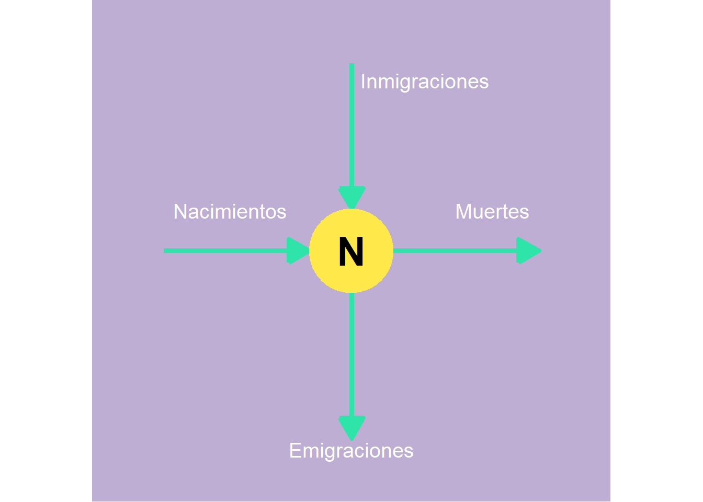
3. Modelos Exponenciales de Poblaciones
Introducción
La dinámica de poblaciones corresponde a un cuerpo teórico y a un conjunto de metodologías, que estudian los aspectos demográficos y cuantitativos de los individuos en sus poblaciones. Tiene como objetivo el estudio de las poblaciones en cuanto a su dimensión o densidad, su estructura, su evolución y sus características generales, consideradas desde un punto de vista cuantitativo. Desde el púnto de vista práctico, se puede considerar a esta dinámica ecológica como un modelo de balance de masas (Figura 1):
El almacenamiento de masa es representado por la densidad N, la cual es el resultado de ingresos de individuos (Inmigraciones y Nacimientos) y de perdidas (Enmigraciones y Muertes). Este balance puede fluctuar en espacio y en tiempo.
El modelo exponencial es el punto de partida para el estudio demográfico de la dinámica poblacional, ya que describe el crecimiento de las poblaciones bajo condiciones ideales (población panmitica - sin selectividad de parejas -, recursos ilimitados - denso independencia -, sin competencia por recursos, sin depredación/enfermedades, sin estocasticidad ambiental). Aun cuando estos supuestos rara vez se cumplen completamente, su valor didáctico es clave y sirve como base inicial de comparación para modelos más realistas (p. ej., logísticos o matriciales que se presentarán más adelante). Este capítulo se organiza en dos bloques de modelación exponencial: tiempo continuo y tiempo discreto, con énfasis en figuras y ejercicios para fortalecer las competencias en la cuantificación de poblaciones.
Objetivo
- Calcular, visualizar y analizar trayectorias de crecimiento exponencial contínuo y discreto, bajo distintos escenarios de poblaciones.
Competencias específicas
- Calcular proyecciones demográficas a formulaciones matemáticas.
- Generar gráficos reproducibles y comparables de modelos exponenciales en R.
- Interpretar críticamente resultados, bajo los supuestos de este tipo de modelos.
A. Tiempo continuo
El modelo exponencial continuo describe el cambio en el tamaño de la población en función del tiempo como un proceso suave, en el cual las tasas de natalidad y mortalidad se aplican constantemente en cada instante. Este enfoque es especialmente útil para poblaciones microbianas (bacterias, protozoarios, algas) que se reproducen de forma continua, así como para estimar procesos demográficos en poblaciones humanas donde los nacimientos y muertes ocurren a lo largo del año de manera no estacional.
En ecología de poblaciones silvestres, los modelos continuos resultan apropiados para organismos con reproducción asincrónica, como muchos invertebrados acuáticos, plantas perennes y poblaciones de peces en ambientes marinos donde no hay una temporada de reproducción marcada. En el caso de humanos, el modelo continuo sirve como una aproximación a la dinámica poblacional cuando se modelan tasas promedio de natalidad y mortalidad en lapsos prolongados de tiempo.
Formulación
A continuación se relaciona a la formula de crecimiento contínuo que será usada de base para los ejercicios de este capítulo.
\(N_{(t)} = N_0. e^{r. t}\), donde:
- (\(N_0\)) es el tamaño inicial de la población evaluada.
- (\(t\)) es el tiempo en el que se evalúa el proceso.
- (\(r\)) es la tasa intrínseca o de crecimiento instantáneo.
- (\(r>0\)) la población aumenta.
- (\(r<0\)) la población disminuye el se reduce.
- (\(r=0\)) la población se mantiene estable.
Preparación (paquetes)
Código
library(tidyverse)Ejemplo 1 — Curvas con r positivo
Supongamos una población de fitoplancton que inicia con 10 células/mL y crece exponencialmente con \(r = 0.4\;ind/ind·hora\).
Proyecte el patrón de crecimiento de esta población en veinte periodos de tiempo.
Respuesta. El tiempo de duplicación** es:
\[ T_d = \frac{\ln 2}{r} = \frac{0.6931}{0.4} \approx 1.73\;horas. \]
Con:
\(t = 20\;horas\):
\[ N(t) = 10\, e^{0.4\cdot 20} = 10\, e^{8} \approx 2.98\times10^{4}\;individuos. \]
Análisis del resultado. En condiciones óptimas (luz y nutrientes), el fitoplancton puede aumentar varios órdenes de magnitud en horas. El carácter exponencial implica que pequeñas diferencias en \(r\) producen grandes separaciones en abundancia con el tiempo.
Visualización del ejercicio.
Proyección exponencial de la muestra de la población en tiempo contínuo (Figura 2).
Código
# Parámetros del ejercicio
N0 <- 10
r <- 0.4
t <- seq(0, 20, by = 0.5)
tabla <- tibble(t, N = N0 * exp(r*t))
# Figura de la proyección exponencial
ggplot(tabla, aes(t, N)) +
geom_line(linewidth = 1.1) +
labs(title = "Crecimiento exponencial contínuo",
subtitle = "N(t) = N0. e^(r.t) con r = 0.4",
x = "Tiempo (t)", y = "Tamaño poblacional (N)") +
theme_bw()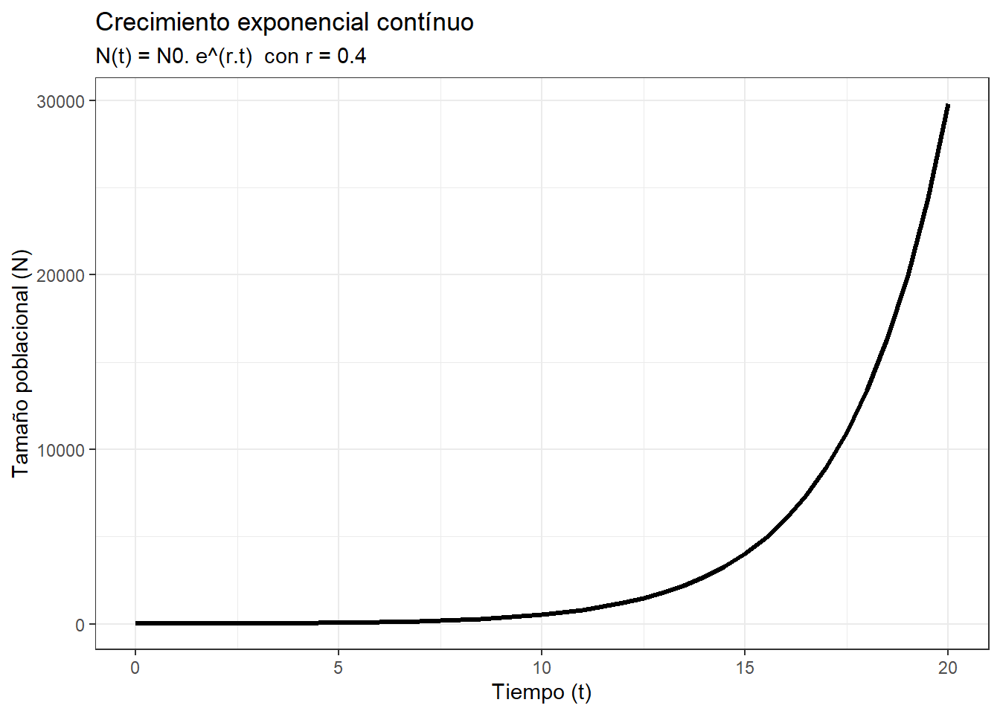
Ejemplo 2 — r negativo (decrecimiento)
Enunciado ecológico. Una población de 120 peces en un estanque contaminado decrece con una tasa instantánea \(r = -0.2\;ind/ind·día\).
(1) Calcule el tiempo que tanda en disminuir la muestra evaluada a la mitad de los peces (\(t_{(1/2)}\)). (2) Proyecte el patrón de disminución de esta población en treinta periodos de tiempo.
Respuesta.
(1) El tiempo de semirreducción es:
\[ T_{1/2} = \frac{\ln(1/2)}{r} = \frac{-0.6931}{-0.2} \approx 3.47\;días. \]
- En \(t = 30\;días\):
\[ N(t) = 120\, e^{-0.2\cdot 30} = 120\, e^{-6} \approx 0.30\;individuos. \]
Análisis del resultado.
Con valores de \(r<0\) se evidencian patrones de mortalidad neta, que pueden incluir perdidas por emigración de los peces o por estrés de los individuos. La población colapsará disminuyendo hasta la extinción si las condiciones ambientales no cambian.
Visualización del ejercicio.
Código
# Parámetros del modelo
N0 <- 120
r <- -0.2
t <- seq(0, 30, by = 1)
tabla <- tibble(t, N = N0 * exp(r*t))
# Figura de la proyección
ggplot(tabla, aes(t, N)) +
geom_line(linewidth = 1.1) +
labs(title = "Decrecimiento (continuo)",
subtitle = "r = -0.2",
x = "Tiempo", y = "Tamaño poblacional") +
theme_bw()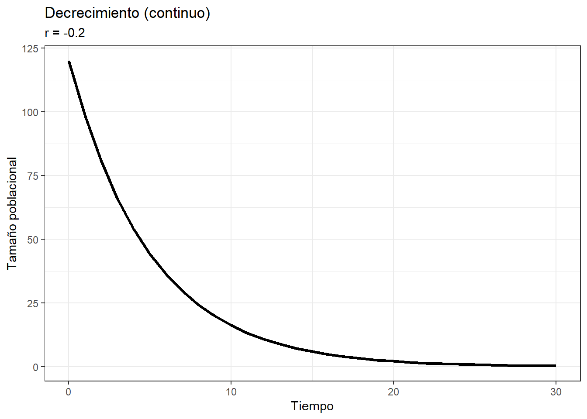
Ejemplo 3 — Comparación de múltiples r
Tres poblaciones de insectos parten con una abundancia \(N_0 = 50\) individuos y tasas de crecimiento instantáneo \(r = 0.1, 0.3, 0.5\;ind/ind·generación\). Calcular el crecimiento en 20 generaciones a partir de los los parámetros definidos.
Respuesta.
Para \(t = 20\;\) generaciones:
\[ \begin{aligned} r=0.1:&\quad N(20)=50\, e^{2} \;\approx\; 3.70\times10^{2}\\ r=0.3:&\quad N(20)=50\, e^{6} \;\approx\; 2.02\times10^{4}\\ r=0.5:&\quad N(20)=50\, e^{10}\;\approx\; 1.10\times10^{6} \end{aligned} \]
Análisis del resultado.
Los resultados muestran que a pesar que hayan incrementos leves o modestos en \(r\), se generan aumentos exponenciales importantes. Esto explica la rápida dominancia de especies con leve ventaja reproductiva en ambientes que le sean favorables.
Visualización del ejercicio.
Código
# Parámetros del modelo
N0 <- 50
t <- seq(0, 20, by = 0.25)
r <- c(0.1, 0.3, 0.5)
tabla <- purrr::map_dfr(r, function(r)
tibble(t, r = r, N = N0 * exp(r*t)))
# Figura de las proyecciones
ggplot(tabla, aes(t, N, group = factor(r),
linetype = factor(r))) +
geom_line(linewidth = 1.05) +
labs(title = "Patrón de aumento de la población",
linetype = "Vaores de r", x = "Tiempo (t)",
y = "Tamaño poblacional (N)") +
theme_bw()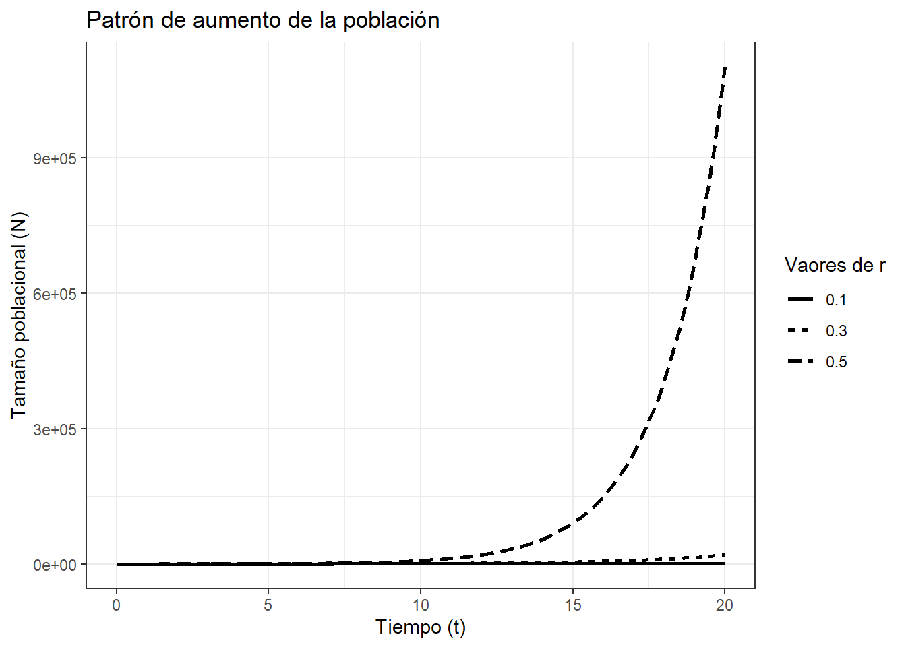
Ejemplo 4 — Tiempo de duplicación y de “mitad”
Se comparan poblaciones con las siguientes tasas de crecimiento instantáneo, en las que :
\(r\) = -0.5, -0.25, -0.1, 0.1, 0.25, 0.5;ind/ind·tiempo.
A partir de estas tasas de crecimiento instantáneo (\(r\)), se pueden calcular dos métricas temporales fundamentales en dinámica poblacional:
Tiempo de duplicación (\(T_d\)): cuánto tarda la población en duplicar su tamaño si \(r>0\).
Tiempo de semirreducción (\(T_{1/2}\)): cuánto tarda la población en reducirse a la mitad de su tamaño si \(r<0\).
En otras palabras, se busca relacionar la magnitud de \(r\) (positiva o negativa) con la rapidez (tiempo) en los cambios de las poblacionales en comparación.
Respuesta.
Para \(r>0\):
\[ T_d = \frac{\ln 2}{r} \quad \text{(duplicación)}. \]
Para \(r<0\):
\[ T_{1/2} = \frac{\ln(1/2)}{r} \quad \text{(semirreducción)}. \]
Para ell caso del ejemplo:
\(r=0.25 \Rightarrow T_d \approx 2.77\;unidades\ de\ tiempo\).
Análisis del resultado. Existe simetría temporal: la rapidez de duplicación en \(r>0\) es análoga a la rapidez de semirreducción en \(r<0\). Métrica clave para comunicar veloces cambios demográficos (brotes vs. control).
Tabulación del ejercicio.
La tabla generada muestra, para cada valor de \(r\):
- La columna Td si $r>0` (tiempo que tarda en duplicar).
- La columna Tsr si $r<0` (tiempo que tarda en reducirse a la mitad).
Código
# Librería requerida
library(tidyverse)
# Valores de r
r_val <- c(-0.50, -0.25, -0.10, 0.10, 0.25, 0.50)
# Tabla inicial
tab <-
tibble(
r = r_val,
Td = if_else(r> 0, log(2)/r, NA_real_), # tiempo de duplicación
Tsr = if_else(r< 0, log(0.5)/r, NA_real_) # medio tiempo (semirreducción)
)
# Tabla en formato largo
tab_largo <-
tab %>%
pivot_longer(cols = c(Td, Tsr),
names_to = "Metrica",
values_to = "Tiempo") %>%
filter(!is.na(Tiempo))Visualización del ejercicio.
El gráfico revela la simetría espejo entre duplicar y reducir los valores de \(r\) a la mitad. En este sentido se obtiene lo siguiente:
Para \(r>0\), las curvas muestran que a medida que \(r\) es mayor, el tiempo de duplicación disminuye y la pendientes de la curva aumenta (las poblaciones crecen más rápido).
Para \(r<0\), las curvas muestran que a medida que \(r\) es más negativo, el tiempo de semirreducción disminuye (decrecen más rápido) (Figura 5).
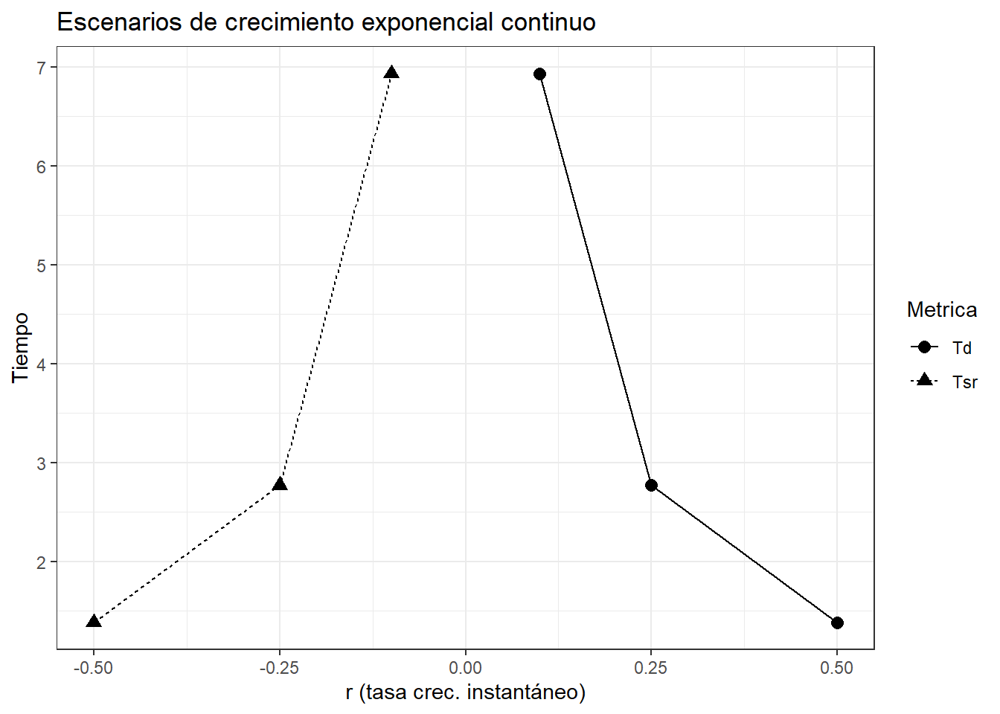
Ejemplo 5 — dN/dt = rN (velocidad instantánea)
Una población de 30 invertebrados inicia con \(r = 0.2\;ind/ind·día\).
(1) Calcular la tasa o velocidad de aumento de la población.
(2) Determinar la densidad en 25 días y la velocidad de incremento.
Respuesta.
En \(t=0\):
\[
\frac{dN}{dt} = rN = 0.2\times 30 = 6\;individuos/día.
\] En \(t=25\):
\[
N_{(t)} = 30\, e^{r\cdot t}\Rightarrow \ N_{(25)} = 30\, e^{0.2\cdot 25} = 30\, e^{5} \approx 4.45\times10^{3}\ invertebrados.
\]
Por tanto:
\[ \frac{dN}{dt} \approx 0.2\times 4.45\times10^{3} = 8.91\times10^{2}\;individuos/día. \]
Análisis del resultado.
La velocidad de cambio crece proporcionalmente con \(N\). En ausencia de límites densodependientes, poblaciones prósperas pueden saturar rápidamente el hábitat.
Visualización del ejercicio.
Código
# Parámetros del modelo
N0 <- 30;
r <- 0.2;
t <- seq(0, 25, by = 0.5)
N <- N0 * exp(r*t)
dNdt <- r * N
tabla <- tibble(t, N, dNdt)
# Figura de la proyección
ggplot(tabla, aes(t, dNdt)) +
geom_line(linewidth = 1.1) +
labs(title = "Velocidad de cambio o de aumento (dN/dt = r.N)",x="Tiempo (t)", y="Velocidad de aumento (dN/dt)") +
theme_bw()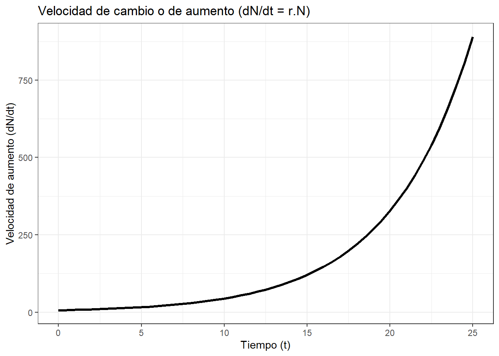
Ejemplo 6 — Estimar r con dos observaciones
Se requiere estimar la tasa de crecimiento instantáneo \(r\) con \(r = \dfrac{\ln(N_t/N_0)}{t}\) en cuatro escenarios de campo.
\(N_{0}\)= 40, 80, 50 y 30 individuos.
\(N_{t}\)= 120, 20, 50 y 200 individuos
\(t\)= 10, 8, 12 y 15 unidades de tiempo
Respuesta.
- \((N_0,N_t,t)=(40,120,10) \Rightarrow r=\ln(3)/10 \approx 0.1099\;\) ind/ind·tiempo.
- \((80,20,8) \Rightarrow r=\ln(0.25)/8 \approx -0.1733\;\) ind/ind·tiempo.
- \((50,50,12) \Rightarrow r=0\;\) ind/ind·tiempo.
- \((30,200,15) \Rightarrow r=\ln(200/30)/15 \approx 0.1265\;\) ind/ind·tiempo.
Análisis del resultado.
Con cuatro censos puede caracterizarse la tendencia (aumento/descenso/estable). Útil como aproximación cuando no hay series largas.
Visualización del ejercicio.
Código
library(tidyverse)
# Escenarios hipotéticos
tabla <- tribble(
~N0, ~Nt, ~t,
40, 120, 10, # crecimiento
80, 20, 8, # decrecimiento
50, 50, 12, # estable
30, 200, 15 # crecimiento rápido
)
# Cálculo de r
resultados <-
tabla %>%
mutate(r = log(Nt/N0)/t)
resultados?(caption)
# A tibble: 4 × 4
N0 Nt t r
<dbl> <dbl> <dbl> <dbl>
1 40 120 10 0.110
2 80 20 8 -0.173
3 50 50 12 0
4 30 200 15 0.126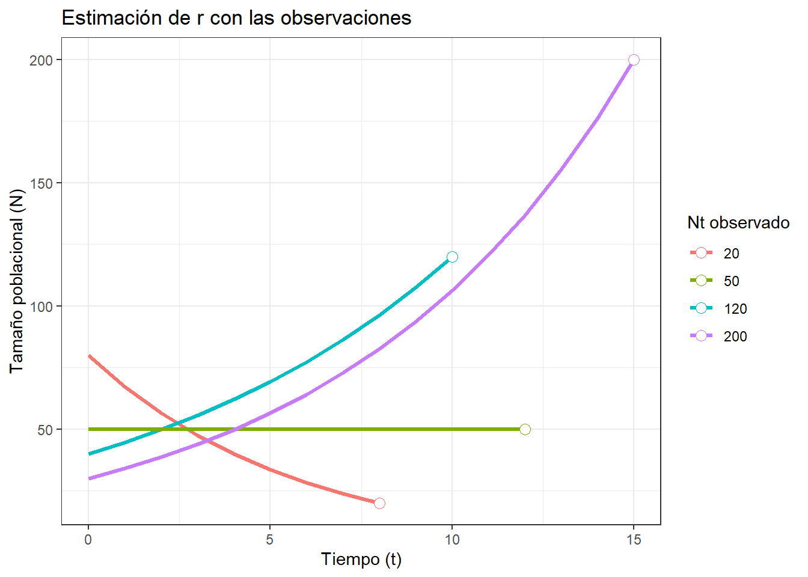
Ejemplo 7 — Estimar r en una población bacteriana
Pregunta 1. Si una población bacteriana pasa de 100 a 800 individuos en 10 horas, ¿cuál es el valor de r?
\[ r = \frac{\ln(N_t/N_0)}{t} = \frac{\ln(800/100)}{10} = \frac{\ln(8)}{10} \approx 0.2089\ bacterias/bacterias.hora \]
Respuesta:
La tasa intrínseca de crecimiento es \(r \approx 0.21\ bacterias/bacterias.hora \approx\) aumento del 21%.
Análisis: El resultado encontrado es típico de poblaciones bacterianas en un aumento elevado, debido a que por cada hora aumenta la población en un 20%, por ello es que en en solo 10 horas aumenta 8 veces su densidad (100 hasta 800 bacterias).
Visualización del ejercicio.
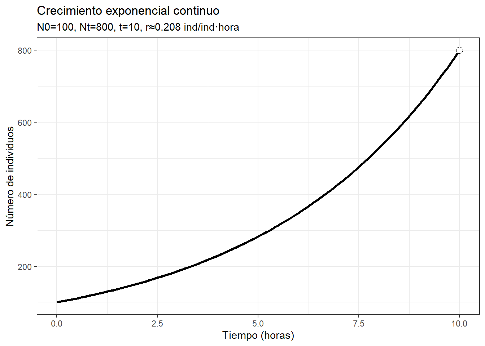
B. Tiempo discreto
Este modelo exponencial se utiliza cuando el crecimiento o reducción de la densidad poblacional ocurre en intervalos claramente definidos de tiempo, por ejemplo, generaciones no solapadas (ej. especies con ciclo de vida anual). En este enfoque, el tamaño de la población en la generación siguiente depende únicamente del tamaño de la generación previa multiplicado por la tasa finita de crecimiento (\(\lambda\)).
El modelo ligístico aplica en poblaciones silvestres con reproducción estacional o en pulsos, como aves migratorias que se reproducen una vez al año, insectos con ciclos de vida sin solapamiento de generaciones, o plantas anuales. En poblaciones humanas, el modelo discreto puede emplearse para analizar censos decenales o estudios demográficos basados en periodos discretos de tiempo, aunque lo más apropiado para este caso es tratarlo con modelos de tipo contínuo.
\[ N_{(t)} = N_0 \cdot \lambda^t \]
Con (\(\lambda>1\)) crecimiento, (\(\lambda=1\)) estable, (\(\lambda<1\)) decrecimiento. Relación con continuo: (\(\lambda = e^r\)).
Ejemplo 1 — λ > 1 (crecimiento)
Una población de 50 plantas anuales aumenta con \(\lambda = 1.2\). Calcular su densidad en 15 periodos de tiempo.
Respuesta. Cada generación es 20% mayor que la anterior.
En \(t=15\):
\[
N_{(15)} = 50 \cdot 1.2^{15} \approx 818\ plantas
\]
Análisis del resultado.
El crecimiento discreto refleja ciclos estacionales. Poblaciones anuales con buena supervivencia muestran incrementos regulares.
Visualización del ejercicio.
Código
# Parámetros del modelo
N0 <- 50;
lambda <- 1.2;
t <- 0:15
tabla <- tibble(t, N = N0 * lambda^t)
# Figura de la proyección
ggplot(tabla, aes(t, N)) +
geom_point(size = 2.4) +
geom_line() +
labs(title = "Crecimiento discreto (λ = 1.2)",
x="Generaciones (t)", y="Densidad poblacional (N)") +
theme_bw()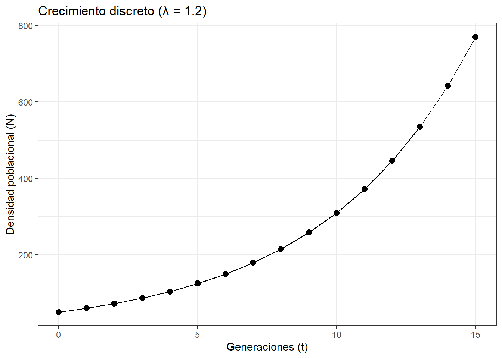
Ejemplo 2 — λ = 1 (estable)
Una población de 100 aves migratorias se mantiene estable con \(\lambda = 1\). Calcular cualquier valor de t entre 0 y 10 periodos de tiempo y analizar el resultado.
Respuesta.
ECuación de crecimiento discreto:
\[
N_{(t)} = N_0 \cdot \lambda^t
\]
\[
N(t) = 100 \cdot 1^t = 100
\] para cualquier \(t\).
Análisis del resultado.
Poblaciones con \(\lambda=1\) representan equilibrio: el reemplazo exacto de individuos.
Tabulación del ejercicio.
Código
# Parámtros del modelo
N0 <- 100;
lambda <- 1;
t <- 0:10
tibble(t, N = N0 * lambda^t)# A tibble: 11 × 2
t N
<int> <dbl>
1 0 100
2 1 100
3 2 100
4 3 100
5 4 100
6 5 100
7 6 100
8 7 100
9 8 100
10 9 100
11 10 100Ejemplo 3 — λ < 1 (decrecimiento)
Una población de 80 insectos decrece con \(\lambda = 0.7\). Calcular su densidad en 12 periodos de tiempo o generaciones.
Respuesta.
Cada generación disminuye en 30% en \(t=12\):
\[
N_{(12)} = 80 \cdot 0.7^{12} \approx 3.6\ insectos
\]
Análisis del resultado.
Representa poblaciones en declive por falta de recursos, depredación o ambientes desfavorables.
Visualización del ejercicio.
Código
# Parámtros del modelo
N0 <- 80;
lambda <- 0.7;
t <- 0:12
tabla <- tibble(t, N = N0 * lambda^t)
# Figura de la proyección
ggplot(tabla, aes(t, N)) +
geom_point(size = 2.4) + geom_line() +
labs(title = "Decrecimiento discreto (λ = 0.7)",
x="Generaciones (t)",
y="Densidad poblacional (N)") +
theme_bw()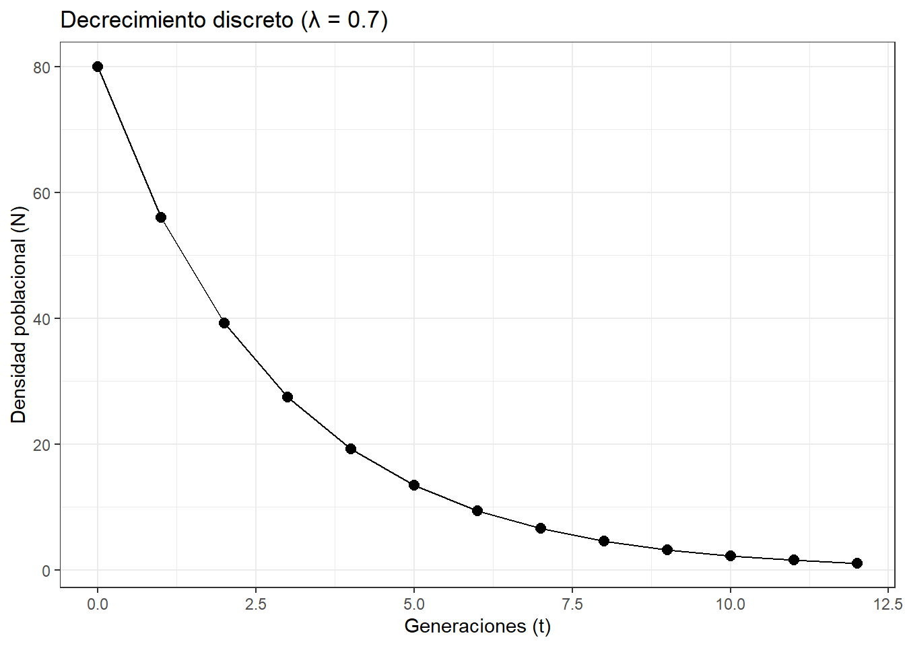
Ejemplo 4 — Crecimiento continuo vs. discreto
Una población de 30 individuos con \(r=0.2\) debe producir la misma trayectoria que \(\lambda = e^r\). Realizar el cálculo de lambda y analizar el resultado.
Respuesta.
\(\lambda = e^{0.2} \approx 1.221\). Ambas formulaciones generan curvas equivalentes.
Visualización del ejercicio.
Código
# Parámetros del modelo
N0 <- 30;
r <- 0.2;
t <- seq(0, 10, by = 1)
lambda <- exp(r)
# Modelo contínuo (cont) vs. discreto (disc)
datos_cont <- tibble(t, Modelo = "Continuo", N = N0 * exp(r*t))
datos_disc <- tibble(t, Modelo = "Discreto", N = N0 * lambda^t)
datos_comp <- bind_rows(datos_cont, datos_disc)
# Figura de la proyección
ggplot(datos_comp, aes(t, N, shape = Modelo,
linetype = Modelo)) +
geom_line() + geom_point(size = 2.2) +
labs(title="Comparación de las trayectorias",
x="Tiempo (t)",
y="Densidad de la población (N)") +
theme_bw()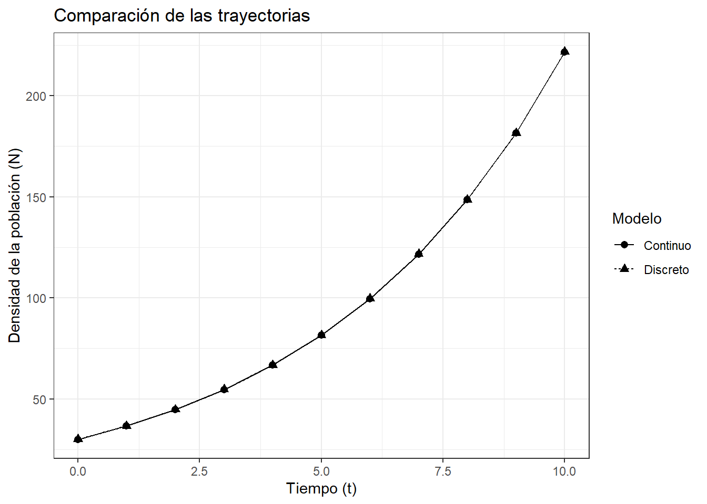
Ejemplo 5 — Estimar λ a partir de excenarios
Estimar \(\lambda\) a partir de \(N_0\), \(N_t\) y \(t\) en distintos escenarios de aumento y reducción de la densidad.
Respuesta.
\[
\lambda = \left(\frac{N_t}{N_0}\right)^{1/t}
\]
Análisis del resultado.
Si \(\lambda>1\) la población crece; si \(\lambda=1\) permanece estable; si \(\lambda<1\) decrece.
Visualización del ejercicio.
Código
library(tidyverse)
# Escenarios hipotéticos (puedes reemplazarlos por los de tus talleres)
escenarios <-
tribble(
~N0, ~Nt, ~t,
60, 240, 6, # crecimiento
100, 100, 10, # estable
80, 20, 8, # decrecimiento
30, 300, 10 # crecimiento fuerte
)
# Tabulación de los escenarios
tab_lambda <-
escenarios %>%
mutate(lambda = (Nt/N0)^(1/t)) %>%
mutate(interpretacion = case_when(
lambda > 1 ~ "Crecimiento (λ>1)",
lambda == 1 ~ "Estable (λ=1)",
lambda < 1 ~ "Decrecimiento (λ<1)"
))
tab_lambda# A tibble: 4 × 5
N0 Nt t lambda interpretacion
<dbl> <dbl> <dbl> <dbl> <chr>
1 60 240 6 1.26 Crecimiento (λ>1)
2 100 100 10 1 Estable (λ=1)
3 80 20 8 0.841 Decrecimiento (λ<1)
4 30 300 10 1.26 Crecimiento (λ>1) 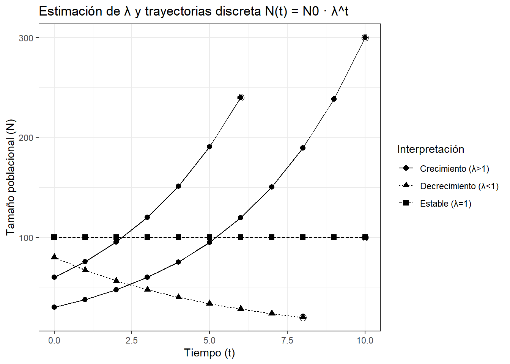
- Si λ\(>1\) la población crece.
- Si λ\(=1\) la población permanece estable.
- Si λ\(<1\) la población decrece.
Para un mismo valor de \(t\), cuanto mayor sea la razón mayor será el valor de \(λ\).
\[Nt/N_{0}\]
El punto en (\(t\), \(N_{t}\)) corresponde a la observación real usada para calcular \(λ\).
Ejemplo 5 — Reconstruir r a partir de λ
La relación \(\lambda = e^r\) permite calcular \(r\).
Respuesta.
\[
r = \ln(\lambda)
\]
Análisis del resultado.
\(r\) y \(\lambda\) son dos formas equivalentes de describir el crecimiento poblacional. La conversión es exacta.
Visualización del ejercicio.
Código
# Valores de λ de ejemplo (ajústalos a tus ejercicios)
lambda_val <- c(0.6, 0.8, 1.0, 1.2, 1.5)
tab_r <- tibble(
lambda = lambda_val,
r = log(lambda_val)) %>%
mutate(
clasificacion = case_when(
lambda > 1 ~ "Crecimiento",
lambda == 1 ~ "Estable",
TRUE ~ "Decrecimiento"
),
# Tiempo de duplicación solo tiene sentido si r > 0
T_dup = if_else(r > 0, log(2)/r, as.numeric(NA)),
# “Medio tiempo” (semirreducción) si r < 0
T_half = if_else(r < 0, log(0.5)/r, as.numeric(NA))
)
tab_r# A tibble: 5 × 5
lambda r clasificacion T_dup T_half
<dbl> <dbl> <chr> <dbl> <dbl>
1 0.6 -0.511 Decrecimiento NA 1.36
2 0.8 -0.223 Decrecimiento NA 3.11
3 1 0 Estable NA NA
4 1.2 0.182 Crecimiento 3.80 NA
5 1.5 0.405 Crecimiento 1.71 NA 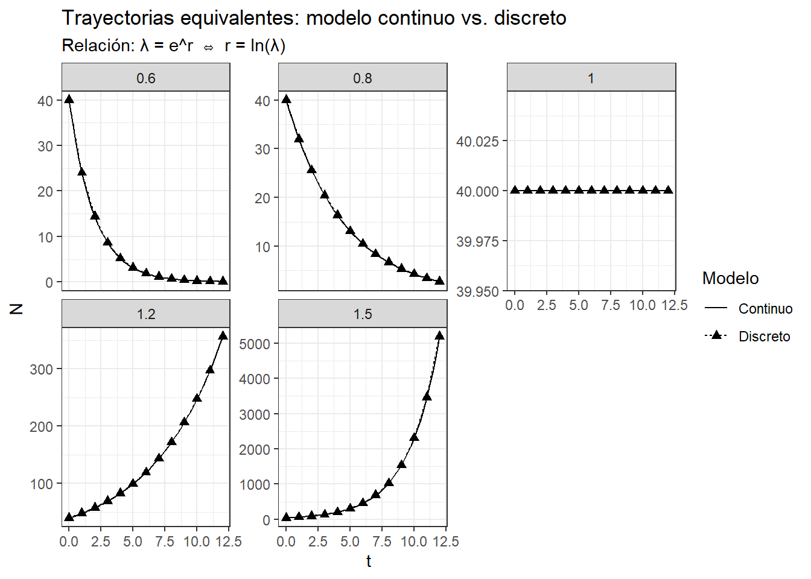
La relación entre modelos es exacta:
λ = \(e^r\) ⟺ \(r=ln(λ)\)Para un mismo valor de λ, la curva continua
\(N_{(t)} = N_0\, e^{rt}\)y la curva discreta
\(N_{(t)} = N_0.λ^t\)son coherentes y producen trayectorias equivalentes.
Si \(r>0\), el tiempo de duplicación es: \(T_d = ln(2)/r\)
Si \(r<0\), o el tiempo de semirreducción es:
\(T_{(1/2)}=\frac{ln{(1/2)}}r\)
Ejemplo 6 — Cálculo de λ
Una población de insectos inicia con 50 individuos y al cabo de 4 generaciones alcanza 200. ¿Cuál es el valor de \(\lambda\)?
\[ \lambda = \left(\frac{N_t}{N_0}\right)^{1/t} = \left(\frac{200}{50}\right)^{1/4} = (4)^{0.25} \approx 1.414\ insectos \]
Respuesta:
La tasa finita de crecimiento es \(\lambda \approx 1.41\). Esto implica que la población aumenta en promedio un 41% por generación, consistente con organismos con ciclos de vida cortos.
C. Errores comunes e interpretación
Uno de los errores más frecuentes en el uso de modelos exponenciales es asumir que las poblaciones crecen o aumentan indefinidamente en la naturaleza, sin considerar los factores de densidad dependiente o los límites ambientales. Otro aspecto común es confundir la tasa intrínseca de crecimiento (r) con la tasa finita (λ), cuando en realidad representan formulaciones diferentes (continua vs. discreta). Además, un error metodológico frecuente es utilizar escalas gráficas inadecuadas, lo que puede exagerar o minimizar diferencias entre escenarios simulados. Reconocer estas fuentes de confusión es fundamental para un análisis correcto en la modelación exponencial de poblaciones. A continuación se muestra una transformación de escala de N, para evaluar mejor la pendiente de la curva.
Código
N0 <- 15;
r <- 0.25;
t <- seq(0, 20, by=0.5)
datos_log <- tibble(t, N = N0*exp(r*t))
# Figura
ggplot(datos_log, aes(t, N)) +
geom_line() +
scale_y_log10() +
labs(title = "Escala logarítmica",
x="t", y="N (log10)") +
theme_bw()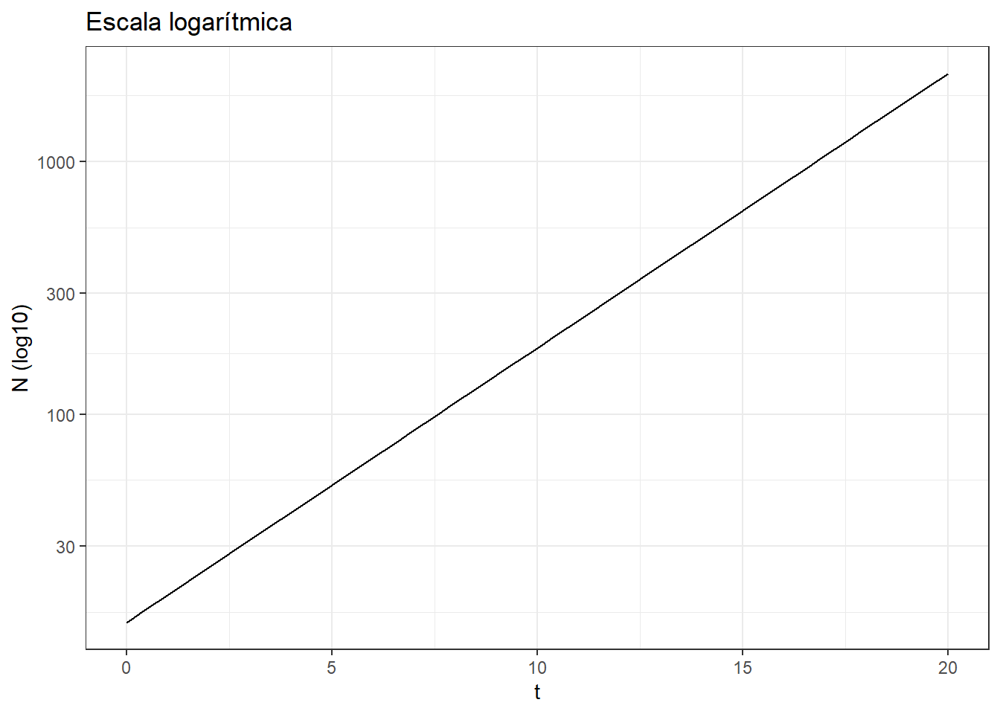
D. Aplicaciones ecológicas y ambientales
A pesar de su simplicidad, el modelo exponencial sigue siendo útil para describir procesos reales, como por ejemplo, en la fase inicial del establecimiento de especies invasoras, la recuperación de poblaciones amenazadas, tras reintroducciones o en el análisis de la propagación de epidemias. Asimismo, permite estimar tiempos de duplicación o extinción bajo condiciones ideales, lo cual resulta clave en programas de conservación y en estudios de manejo poblacional. En el ámbito ambiental, este modelo ilustra los riesgos de extrapolar tendencias de crecimiento ilimitado en contextos donde los recursos son finitos, o donde el factor ambiental modela la dinámica de las poblaciones asociadas, ofreciendo un marco conceptual para la transición hacia modelos logísticos y más realistas.
E. Conclusiones
El modelo exponencial de poblaciones constituye un pilar en la enseñanza y comprensión de la dinámica poblacional. Si bien sus supuestos rara vez se cumplen en condiciones naturales, su aplicación como herramienta didáctica y como base para modelos más complejos sigue siendo insustituible. Al simular escenarios hipotéticos de crecimiento, se facilita la comprensión de cómo los parámetros poblacionales influyen en la trayectoria demográfica y se sientan las bases para avanzar hacia modelos logísticos y otros enfoques que incorporan la realidad ecológica de los sistemas.
F. Cuestionario
F.1 Preguntas teóricas
- Determine las diferencias entre las tasas r y λ y su relación matemática.
- Interpretar la pendiente en escala log de \(N_{(t)}\) bajo el patrón de crecimiento exponencial.
- ¿Qué implica r < 0 o λ < 1? Dé un caso ecológico.
- Explique cómo estimar r con dos mediciones (\(N_0\), \(N_t\)).
- ¿Cuándo usaría un modelo continuo vs. discreto?
- ¿Por qué la fase inicial de una invasión bacteriana puede aproximarse por un modelo exponencial?
- ¿Qué precauciones tomaría al extrapolar trayectorias exponenciales?
- Justifique el uso de escala log en evaluación del crecimiento exponencial.
- Mencione los procesos que violan los supuestos del modelo exponencial.
- Implemente un mini-experimento numérico cambiando r o λ y describa su efecto visual.
F.2 Preguntas de cálculo y gráficas

[ Imágen tomada de Alex Green]
- Una población biológica crece a una tasa anual del 6%. Si la población actual es de 5000:
- ¿Cuál será en 7 años?
- ¿Cuál será en 7 años?
- Graficar la proyección de esta población en 10 periodos de tiempo.
- Graficar la proyección de esta población en 10 periodos de tiempo.
- Una población de aves crece a un ritmo anual del 5%. Si la población actual es de 2000 individuos,
- ¿cuántos años se tardará para que vuelvan a doblar su densidad? Redondea tu respuesta a la centésima más cercana.
- ¿cuántos años se tardará para que vuelvan a doblar su densidad? Redondea tu respuesta a la centésima más cercana.
- Graficar la proyección poblacional en 20 periodos de tiempo o 20 años.
- Una población de hormigas presenta una tasa de disminución anual del 7,2%.
- ¿Cuántos años le tomará a esta población de 227 gramos para llegar a 93 gramos de biomasa?
- Graficar la proyección de esta población en 20 periodos de tiempo.
- Graficar la proyección de esta población en 20 periodos de tiempo.
- Una población de peces aumenta a una tasa anual de 7%. Si la población actual es de 8.000 individuos:
- ¿Cuántos años le tomará a esta población para llegar a 18.000 individuos?
- ¿Cuántos años le tomará a esta población para llegar a 18.000 individuos?
- Graficar la proyección de esta población en 20 periodos de tiempo.
- Graficar la proyección de esta población en 20 periodos de tiempo.
F.3 Preguntas de cálculo
Una población biológica crece a una tasa anual del 6%. Si la población actual es de 5000, ¿cuál será en 7 años?
Una colonia de bacterias crece a una tasa anual del 8%. Si inicialmente hay 1,500 bacterias, ¿cuántas bacterias habrá al cabo de 10 años?
Un virus se propaga en una comunidad duplicándose cada 1.5 días. Si inicialmente hay 500 virus, ¿cuál es la población después de 10 días?
Una población de peces crece a una tasa del 5% anual. Si en 12 años la población alcanza los 6,000 individuos, ¿cuál era la población inicial?
En un experimento, se observa que una población de microbios se triplica en 10 horas. Si la población inicial es de 200 microbios,
- determina la tasa (\(r\));
- calcula la población después de 15 horas.
Una población de aves crece a un ritmo anual del 5%. Si la población actual es de 2000, ¿cuántos años se tardará para que la población se duplique? (Redondea tu respuesta a la centésima más cercana.)
Una población de insectos se duplica cada 8 años. Si actualmente hay 5,000 insectos, ¿cuál será la población en 24 años?
Una población de hormigas presenta una tasa de disminución anual del 7,2%. ¿Cuántos años le tomará a esta población, cuya biomasa es de 227 gramos, reducirse a 93 gramos
Una población de conejos decrece a una tasa anual del 4%. Si actualmente hay 1,200 conejos, ¿cuántos años se necesitarán para que la población se reduzca a 800?
Supongamos que la población de peces marinos crece a una tasa anual del 7%. Si la población actual es de 8000 individuos, ¿cuántos años se tardará para que la población alcance los 18000 individuos?
Una población de algas en un lago crece a una tasa anual del 9%. Si actualmente hay 10,000 unidades, ¿en cuántos años se alcanzarán 50,000 unidades?
Se estima que una población de ardillas aumentará de 1,800 a 2,500 en 10 años. Determina la tasa de crecimiento instantáneo \(r\).
Una población silvestre crece a una tasa anual del 7%. Si la población alcanza los 2000 individuos en 7 años, ¿cuál era el tamaño de la población inicial?
Una población de curíes de interés para consumo crece a una tasa anual del 3%. Si la población actual es de 3000 individuos, ¿cuántos años se tardará para que la población doble su densidad?
En un cultivo de hongos, la población aumenta de 300 a 1200 en 6 días.
- Determina la tasa (\(r\)).
- Calcula el tiempo de duplicación de la población.
Una población de virus en un cultivo crece exponencialmente. Si la población aumenta de \(10^3\) a \(10^9\) en 24 horas, ¿cuál es la tasa de crecimiento instantáneo \(r\) y cuál es el tiempo de duplicación?
Una población endémica de mariposas declina su densidad anual en un 12,5%. A partir de una muestra de 127 gramos de biomasa, ¿cuál será su biomasa a los 6 años?
Según el artículo “U.S. reaching the 300 million person milestone”, la población de EE.UU. alcanzó los 200 millones en 1967. Asumiendo que en 2007 la población es de 303 millones,
- Calcula la tasa de incremento instantáneo anual.
- Si esta tendencia continúa por los 20 años siguientes, ¿cuál será el tamaño de la población en 2027?
Una población de elefantes crece a una tasa anual del 2%. Actualmente hay 800 elefantes, ¿en cuántos años se triplicará la población?
Según las proyecciones de las Naciones Unidas, para el año 2050 se estima que la población mundial estará en un rango:
- Menor estimador: 7.3 billones de personas.
- Mayor estimador: 10.7 billones de personas.
Si se asume que la población mundial inicia con 8.1 billones en 2023, ¿cuál es la tasa de incremento anual en cada estimador? (El tiempo transcurrido es de 27 años, de 2023 a 2050). https://countrymeters.info/es/World
- Con una tasa de crecimiento poblacional de ( r = 2.8% ) anual,
- ¿cuánto tiempo tomaría que un par de individuos produzca la población mundial actual (cerca de 10 billones de personas)?
- Además, ¿en qué tiempo se duplicaría esta población? Discuta el resultado.
- Se esperaba que la población humana mundial doblara en tamaño en aproximadamente 50 años.
- Calcula la tasa de crecimiento (\(r\)) asumiendo este tiempo de duplicación.
- Si la población en 1993 era de 5400 millones, ¿cuál es el tamaño proyectado para el año 2030?
- Usted estudia una población de escarabajos con un tamaño inicial de 3000. Durante un mes se registraron 400 nacimientos y 150 muertes.
- Estime la tasa de crecimiento (\(r\)).
- Proyecte el tamaño poblacional en 6 meses.
Usted estudia una población de orquídeas en peligro, para las cuales la tasa de nacimientos es (\(b = 0.0021\)) nacimientos/individuo.año y la tasa de muertes es (\(d = 0.0020\)) muertes/individuo.año. La población actual es de 40 plantas. Se proyecta que un nuevo centro comercial reducirá esta población a 20 plantas. Explique el efecto del desarrollo propuesto sobre la probabilidad de extinción de esta población.
Si una población de E. coli crece de 1000 células a ( 2 ^9 ) células en 6 horas,
- ¿cuál es su tasa intrínseca de incremento?
- ¿Está la población duplicándose en el tiempo esperado?
- Una especie invasora de plantas disminuye su población a una tasa del 3% anual debido a medidas de control. Si inicialmente hay 5,000 plantas:
- ¿Cuál será el número aproximado de plantas después de 20 años?
- ¿Cuánto tiempo se necesitará para reducir la población a la mitad?
- Una colonia de bacterias se duplica cada 4 horas.
- Determina la tasa de crecimiento instantáneo (\(r\)).
- Calcula el tiempo necesario para que la población se incremente a 10 veces la cantidad inicial.
- Una población de conejos aumenta de 250 a 800 individuos en 12 meses siguiendo un modelo exponencial.
- Calcula la tasa de crecimiento (\(r\)).
- Estima la población al cabo de 24 meses.
- Un cultivo de células aumenta de 10,000 a 25,000 en 48 horas siguiendo un modelo exponencial.
- Calcula la tasa de crecimiento (\(r\)).
- Estima la población a las 72 horas.
- Una colonia de algas en un estanque aumenta en un 200% en 30 días (es decir, la población se convierte en 3 veces la inicial).
- Determina la tasa (\(r\));
- ¿En cuántos días se habrá cuadruplicado la población respecto a la inicial?
- Una población de bacterias crece un 25% cada 2 horas de forma compuesta.
- Calcula la tasa de crecimiento instantáneo (\(r\)).
- Estima la población después de 10 horas si la población inicial es de 800 bacterias.
Respuestas a las preguntas de cálculo y gráficas (F2)
1. Población biológica
Una población biológica crece a una tasa anual del 6%. Si la población actual es de 5000:
- (1) ¿Cuál será en 7 años?
- (2) Graficar la proyección de esta población en 10 periodos de tiempo.
Respuesta
Primero hay que utilizar la fórmula para el crecimiento exponencial de una población biológica:
\[
Nt = No. e^{(r.t)}
\] Donde:
Nt= densidad de la población después de un tiempo t
No= densidad inicial de la población (en el tiempo 0)
r= tasa de crecimiento intrinsico o instantaneo.
t= tiempo transcurrido (expresado en años)
En este caso, se tiene que:
No= 5000 individuos
r= 0.06 indv./indv.*t (6% expresado como un decimal)
t= 7 años
Procedimiento
(1) Calculo de la densidad de la población después de 7 años.
Función asignada como población (Nt) la cual permite estimar el crecimiento de la población Nt, basado en la densidad inicial No, en la tasa de crecimiento intrisico o instantánea r en periodos de tiempo especificos t.
Código
# Paso 1: Función para el crecimiento exponencial
Nt <- function(No, r, t)
{ No * exp(r * t) }
Ntfunction (No, r, t)
{
No * exp(r * t)
}La función anterior se puede reemplazar por la siguiente más sencilla, así:
\(Nt = No. e^{(r.t)}\)
- Cálculo del tamaño de la población en 7 periodos de tiempo
N7.
Código
# Estimación la densidad de la población (Nt) después de 7 años (N7)
N7 <- round(Nt(No = 5000, r = 0.06, t = 7))
N7[1] 7610- Figura del modelo de proyección de la población en 10 periodos de tiempo.
- Base de datos o data frame
datos, en 10 periodos de tiempo, para posteriormente realizar la figura del modelo exponencial en ggplot.
Código
# Data frame con los valores de población para varios tiempos
datos <- data.frame(t = 0:10, Nt = Nt(No = 5000, r = 0.06, t = 0:10))
round(datos,0) t Nt
1 0 5000
2 1 5309
3 2 5637
4 3 5986
5 4 6356
6 5 6749
7 6 7167
8 7 7610
9 8 8080
10 9 8580
11 10 9111- Figura del modelo de proyección de la población en 10 periodos de tiempo.
Código
# Grafica de la evolución de la población
ggplot(datos, aes(x = t, y = Nt)) +
geom_point(aes(x = 7, y = N7),
color = "red", size = 3) +
geom_smooth() +
geom_text(aes(x = 7, y = N7, label = N7),
vjust = -1) +
xlab("Tiempo (años)") +
ylab("Densidad Poblacional (N)") +
ggtitle("Crecimiento Exponencial") +
theme_bw()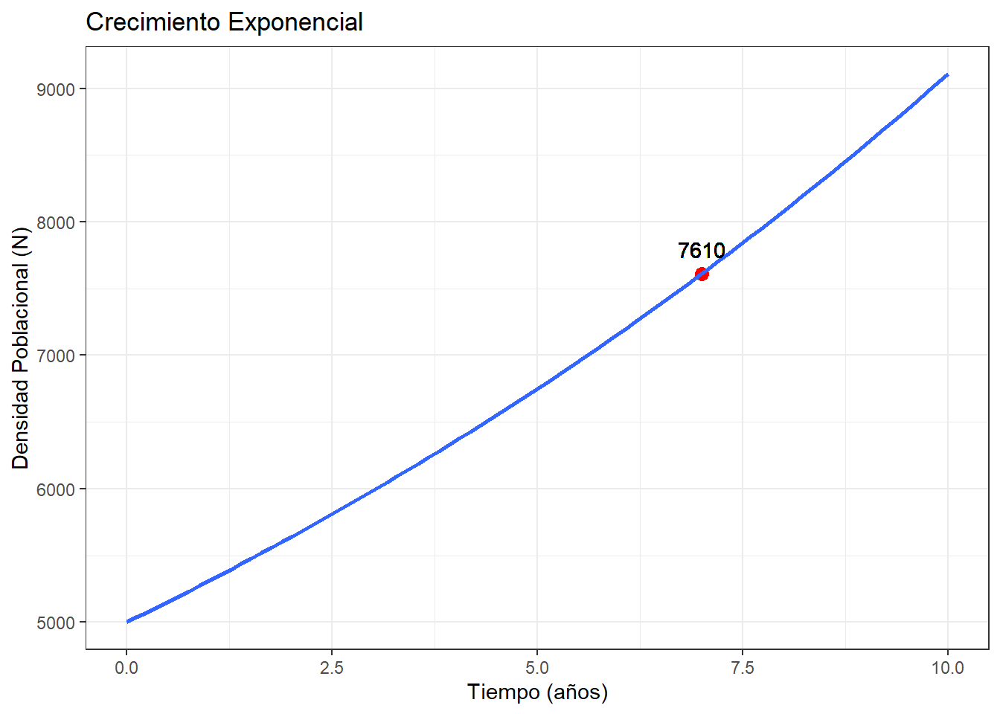
En la figura resultante, se observa cómo la población crece exponencialmente a lo largo de los 10 periodos de tiempo, y cómo después de 7 periodos, la población alcanza un valor de aproximadamente 7,764 individuos.
Otra forma de graficar el resultado
Código
library(tidyverse)
N0 <- 5000;
r <- log(1.06);
t <- 0:7
df <- tibble(t, N = N0 * exp(r*t))
ggplot(df, aes(t, N)) +
geom_line(linewidth=1.1) +
geom_point(size=2.5) +
labs(x="Años", y="N",
title="Crecimiento exponencial (6% anual)") +
theme_bw()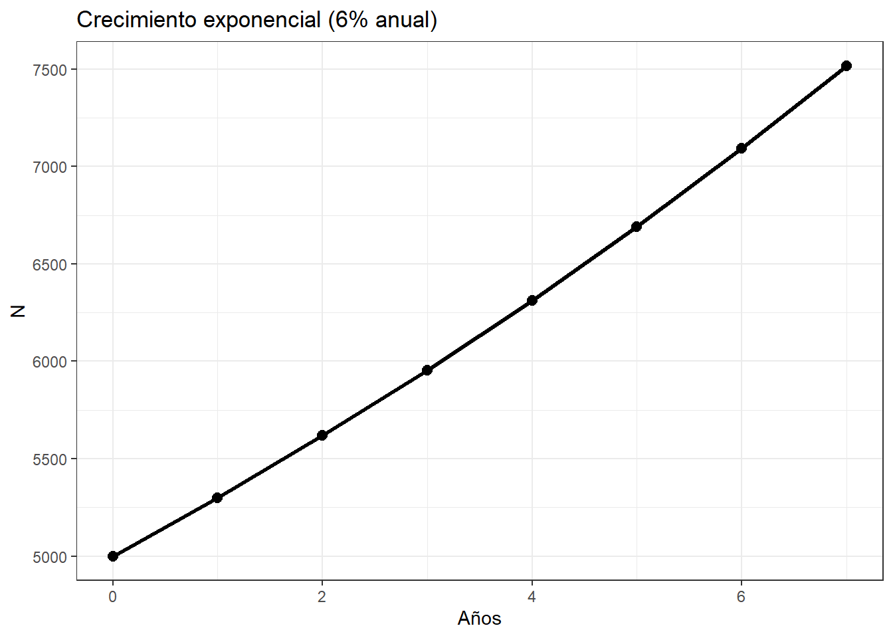
2. Población de aves

Una población de aves crece a un ritmo anual del 5%. Si la población actual es de 2000,
(1) ¿cuántos años se tardará para que vuelvan a doblar? Redondea tu respuesta a la centésima más cercana.
(2) Graficar la proyección de esta población en 20 periodos de tiempo.
Respuesta
Se requiere utilizar la fórmula para el crecimiento exponencial:
\[
N_t = N_0. e^{(r.t)}
\] En este caso, se tiene que:
No= 2000 individuos
r= 0.05 \(indv./indv.t\) (aumento del 5%)
t= 7 años
Preguntas a resolver:
(1) \(tdoble\)= ?
(2) Proyección exponencial en 10 periodos de tiempo
Procedimiento
(1) En este caso, se requiere saber cuántos años tardará la población en duplicarse. Para hacer esto, tenemos que:
\(t_{doble}= ln(2)/r\)
En este caso:
\(N_0 = 2000.r\) = 0.05 \(indv./indv.t\) = (5%)
Función asignada como población (Nt) la cual permite estimar el crecimiento de la población Nt, basado en la densidad inicial No, en la tasa de crecimiento intrisico o instantánea r en periodos de tiempo especificos t.
Código
# Definimos la función para el crecimiento exponencial
Nt <- function(No, r, t) { No * exp(r * t) } Cálculo del tiempo de duplicación de la población tdoble.
Código
# Tiempo que tardará la población en duplicarse redondeado a dos decimales
tdoble <- round(log(2) / 0.05, 2)
tdoble[1] 13.86- Figura de la proyección poblacional en 20 periodos de tiempo o 20 años.
Base de datos o data frame datos, en 20 periodos de tiempo, para posteriormente realizar la figura del modelo exponencial en ggplot
Código
# Creamos un data frame con los valores de población para varios tiempos
datos <- data.frame(t = 0:20,
Nt = round(Nt(No = 2000, r = 0.05, t = 0:20)))
head(datos) t Nt
1 0 2000
2 1 2103
3 2 2210
4 3 2324
5 4 2443
6 5 2568Figura del modelo de proyección de la población en 20 periodos de tiempo.
Código
# Graficamos la evolución de la población
library(ggplot2)
ggplot(datos, aes(x = t, y = Nt)) +
geom_line(color = "blue") +
geom_vline(xintercept = tdoble, color = "red", linetype = "dashed") +
geom_text(x = tdoble +
0.5, y = max(datos$Nt) / 2, label = paste("Duplicaciónnen", tdoble, "años"), color = "red", size = 4, vjust = 0.5) +
xlab("Tiempo (años)") +
ylab("Población (N)") +
ggtitle("Crecimiento exponencial de la población de aves") +
theme_bw()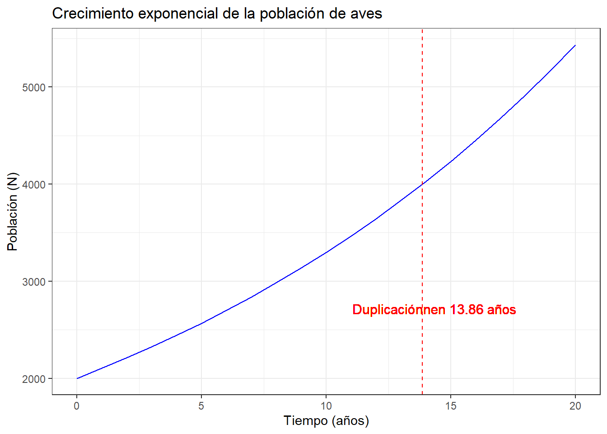
En la figura, se observa cómo la población crece exponencialmente a lo largo del tiempo, y cómo la línea vertical roja indica el momento en que la población se duplica. El tiempo que tardará la población en duplicarse es de aproximadamente 13.86 años.
3. Población de Hormigas

Una población de hormigas presenta una tasa de disminución anual del 7,2%.
(1) ¿Cuántos años le tomará a esta población de 227 gramos para llegar a 93 gramos de biomasa?
(2) Graficar la proyección de esta población en 20 periodos de tiempo.
Respuesta.
Se requiere utilizar la fórmula para el crecimiento exponencial:
\[ Nt = No. e^{(r.t)} \]
En este caso, se tiene que:
No= 227 gramos
Nt= 93 gramos
t= ?
r= -0.072 indv./indv.*t (disminución del 7.2%)
Preguntas a resolver:
(1) t= ?
(2) Proyección exponencial en 10 periodos de tiempo
Procedimiento
(1) En este caso, si: \(Nt = No. e^{(r.t)}\) .
De acuerdo a diferentes despejes logarítmicos:
\[
t = \frac{\ln(N_t/N_0)}{r} = \frac{\ln(93/227)}{-0.072}.
\] Cálculo:
\[
t = \frac{\ln(0.409)}{-0.0749} = \frac{-0.895}{-0.072} \approx 12.39 \;\text{años}.
\] El cálculo también se puede realizar con la siguiente función:
Código
# Definimos la función para la disminución exponencial
biomasa <- function(No, r, t) {No * exp(-r * t)}Código
t = round(log(93/227)/(-0.072), 2)
t[1] 12.39- Figura de la proyección poblacional en 20 periodos de tiempo o 20 años.
Base de datos o data framedatos, en 20 periodos de tiempo, para posteriormente realizar la figura del modelo exponencial en ggplot
Código
# Creamos un data frame con los valores de población para varios tiempos
datos <- data.frame(t = 0:20,
biom = biomasa(No = 227, r = 0.072, t = 0:20))
head(datos) t biom
1 0 227.0000
2 1 211.2305
3 2 196.5565
4 3 182.9019
5 4 170.1959
6 5 158.3725Figura del modelo de proyección de la población en 20 periodos de tiempo.
Código
# Graficamos la evolución de la población
ggplot(datos, aes(x = t, y = biom)) +
geom_smooth() +
geom_hline(yintercept = 93,
color = "red",
linetype = "dashed") +
geom_text(x = max(datos$t) / 2,
y = 100,
label = paste("Llegadana 93 gnen",
t, "años"), color = "red", size = 4, vjust = 0.5) +
xlab("Tiempo (años)") +
ylab("Biomasa (g)") +
ggtitle("Disminución exponencial de una población de hormigas") +
theme_bw()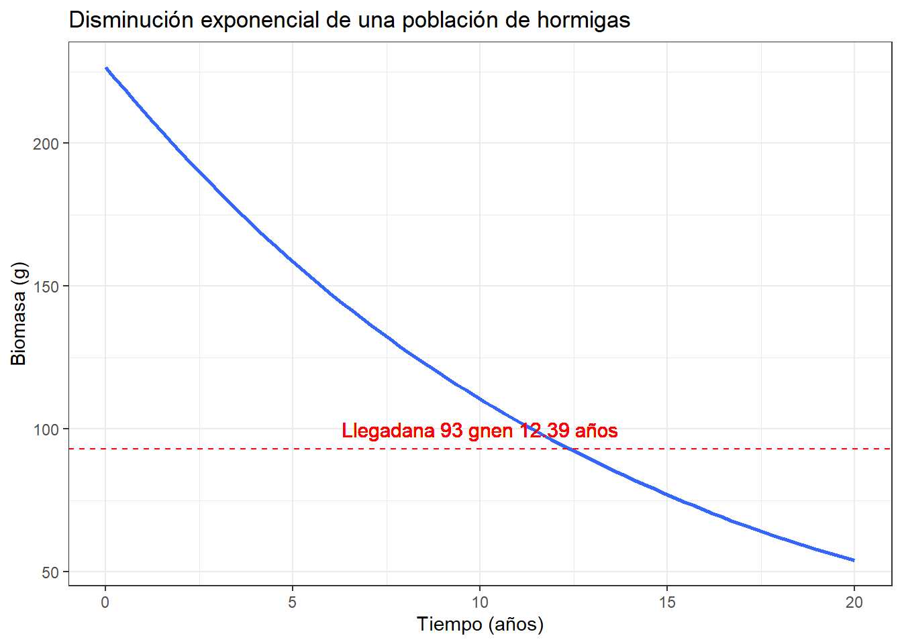
En la figura resultante, podemos observar cómo la biomasa disminuye exponencialmente a lo largo del tiempo, y cómo la línea horizontal roja nos indica el momento en que la biomasa alcanza los 93 gramos. El tiempo que tardará la biomasa en llegar a 93 gramos es de aproximadamente 12.39 años.
4. Población de Peces

Una población de peces aumenta a una tasa anual de 7%. Si la población actual es de 8.000 individuos:
(1) ¿Cuántos años le tomará a esta población para llegar a 18.000 individuos?
(2) Graficar la proyección de esta población en 20 periodos de tiempo.
Respuesta.
Se requiere utilizar la fórmula para el crecimiento exponencial:
\(N_t = N_0 . e^{(r.t)}\)
En este caso, se tiene que:
No= 8000 indv.
Nt= 18000 indv.
t= ?
r= -0.07 indv./indv.*t (aumento del 7%)
Preguntas a resolver:
(1) t= ?
(2) Proyección exponencial en 20 periodos de tiempo
Procedimiento
(1) En este caso, si: \(N_t = N_0 . e^{(r.t)}\).
De acuerdo a diferentes despejes logarítmicos:
\[
t = \frac{\ln(N_t/N_0)}{r} = \frac{\ln(18000/8000)}{0.07}.
\] Cálculo:
\[
t = \frac{\ln(0.409)}{-0.0749} = \frac{\ln(18000/8000)}{0.07} \approx 11.58 \;\text{años}.
\]
El cálculo también se puede realizar con la siguiente función:
Código
# Definimos la función para la disminución exponencial
Nt <- function(No, r, t) { No * exp(r * t) } Cálculo del tamaño de la población en 7 periodos de tiempo N7.
Código
t = round(log(18000/8000)/(0.07 * 1), 2)
t[1] 11.58- Figura de la proyección poblacional en 20 periodos de tiempo o 20 años.
Base de datos o data frame datos, en 20 periodos de tiempo, para posteriormente realizar la figura del modelo exponencial en ggplot
Código
# Creamos un data frame con los valores de población para varios tiempos
datos <- data.frame(tiempo = 0:20,
Nt = round(Nt(No = 8000,
r = 0.07,
t = 0:20)))
head(datos) tiempo Nt
1 0 8000
2 1 8580
3 2 9202
4 3 9869
5 4 10585
6 5 11353Figura del modelo de proyección de la población en 20 periodos de tiempo.
Código
# Grafica de la evolución de la población
ggplot(datos, aes(x = tiempo, y = Nt)) +
geom_point() +
geom_smooth() +
theme_bw()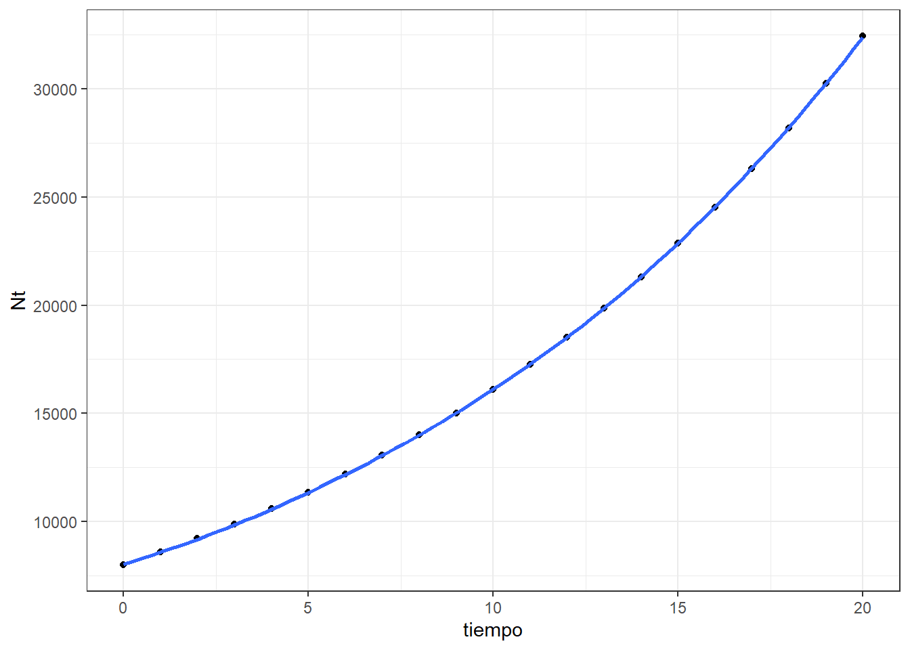
Código
# Graficamos la evolución de la población
ggplot(datos, aes(x = tiempo, y = Nt)) +
geom_smooth() +
geom_vline(xintercept = t,
color = "red",
linetype = "dashed") +
geom_text(x = t + 0.5, y = max(datos$Nt) / 2, label = paste("Aumento de Ntnen", t, "años"), color = "red", size = 4, vjust = 0.5) +
xlab("Tiempo (años)") +
ylab("Población (Nt)") +
ggtitle("Crecimiento exponencial de la población de peces") +
theme_bw()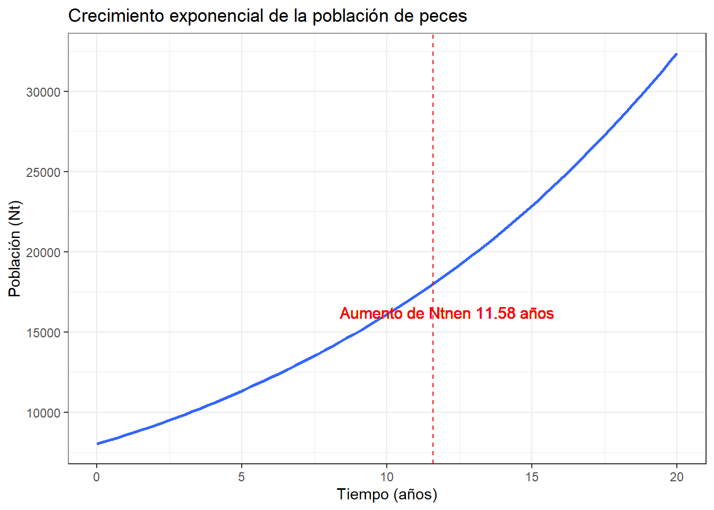
Respuestas a las preguntas de cálculo (F3)
5. Proyección de una Población Biológica
Una población biológica crece a una tasa anual del 6%. Si la población actual es de 5000, ¿cuál será en 7 años?
Procedimiento:
- Usamos la fórmula del crecimiento exponencial: \[ N_{(t)} = N_0\, e^{rt}. \]
- Con (\(N_0 = 5000\) ), (\(r = 0.06\)) y (\(t = 7\)) años: \[ N_{(7)} = 5000\, e^{0.06 \times 7}. \]
Análisis:
Este problema ilustra cómo aplicar el modelo exponencial para proyectar el tamaño de una población a futuro, considerando una tasa de crecimiento constante.
6. Proyección de una Colonia de Bacterias a 10 Años
Una colonia de bacterias crece a una tasa anual del 8%. Si inicialmente hay 1,500 bacterias, ¿cuántas bacterias habrá al cabo de 10 años?
Procedimiento:
- Utiliza la fórmula de crecimiento exponencial:
\[ N_{(t)} = N_0 \cdot e^{rt} \] - Se tienen:
- \(N_0 = 1500\)
- \(r = 0.08\)
- \(t = 10\)
- Sustituye en la fórmula:
\[ N_{(10)} = 1500 \cdot e^{0.08 \times 10} = 1500 \cdot e^{0.8} \] - Calcula \(e^{0.8}\) y multiplica por \(1500\) para obtener la población final.
Análisis:
Este ejercicio refuerza el uso del modelo exponencial para proyectar el crecimiento poblacional a lo largo del tiempo.
8. Determinación de la Población Inicial de Peces
Una población de peces crece a una tasa del 5% anual. Si en 12 años la población alcanza los 6,000 individuos, ¿cuál era la población inicial?
Procedimiento:
- Utiliza la fórmula de crecimiento exponencial:
\[ N_{(t)} = N_0 \cdot e^{rt} \] - Se tienen:
- \(N_{(12)} = 6000\)
- \(r = 0.05\)
- \(t = 12\)
- Plantea la ecuación:
\[ 6000 = N_0 \cdot e^{0.05 \times 12} = N_0 \cdot e^{0.6} \] - Despeja \(N_0\):
\[ N_0 = \frac{6000}{e^{0.6}} \]
Análisis:
Este problema enseña a encontrar la población inicial a partir de los datos finales y la tasa de crecimiento.
9. Crecimiento Experimental en Microbios
En un experimento, se observa que una población de microbios se triplica en 10 horas. Si la población inicial es de 200 microbios,
a) determina la tasa (\(r\));
b) calcula la población después de 15 horas.
Procedimiento:
- Se tiene: \[ 3 = e^{10r} \quad \Longrightarrow \quad r = \frac{\ln(3)}{10}. \]
- Aplicando el modelo de crecimiento: \[ N_{(15)} = 200\, e^{15r} = 200\, e^{15\left(\frac{\ln(3)}{10}\right)}. \]
Análisis:
Este ejercicio permite determinar la tasa de crecimiento a partir de una observación experimental y utilizarla para predecir la población en un tiempo intermedio, demostrando la utilidad del modelo exponencial en experimentos microbiológicos.
10. Duplicación de una Población de Aves
Una población de aves crece a un ritmo anual del 5%. Si la población actual es de 2000, ¿cuántos años se tardará para que la población se duplique? (Redondea tu respuesta a la centésima más cercana.)
Procedimiento:
- Para la duplicación, el modelo es: \[ 2N_0 = N_0\, e^{rt} \quad \Longrightarrow \quad e^{rt} = 2. \]
- Tomando logaritmos naturales: \[ rt = \ln(2) \quad \Longrightarrow \quad t = \frac{\ln(2)}{r}. \]
- Con (\(r = 0.05\)): \[ t = \frac{\ln(2)}{0.05} \approx \frac{0.6931}{0.05} \approx 13.86 \text{ años}. \]
Análisis:
Este problema demuestra cómo calcular el tiempo de duplicación de una población utilizando la función exponencial y la constante de crecimiento, proporcionando una aproximación práctica en ecología.
11. Proyección de Duplicación en una Población de Insectos
Una población de insectos se duplica cada 8 años. Si actualmente hay 5,000 insectos, ¿cuál será la población en 24 años?
Procedimiento:
- La duplicación cada 8 años implica que cada 8 años la población se multiplica por 2.
- En 24 años se realizan 3 duplicaciones:
\[ N_{(24)} = 5000 \cdot 2^3 = 5000 \cdot 8 = 40000 \]
Análisis:
Este problema ilustra el concepto de duplicación y el uso de potencias para calcular el crecimiento en periodos discretos.
12. Decaimiento de Biomasa en una Población de Hormigas
Una población de hormigas presenta una tasa de disminución anual del 7,2%. ¿Cuántos años le tomará a esta población, cuya biomasa es de 227 gramos, reducirse a 93 gramos?
Procedimiento:
- Utilizamos el modelo de decaimiento exponencial: \[ N_{t} = N_0\, e^{-rt}. \]
- Con \(N_{0}\) = 227g, \(r\) = 0.072 ) y \(N_{t}\) = 93g, se tiene: \[ 93 = 227\, e^{-0.072\, t}. \]
- Dividiendo entre 227: \[ e^{-0.072\, t} = \frac{93}{227}. \]
- Aplicando logaritmos: \[ -0.072\, t = \ln\left(\frac{93}{227}\right) \quad \Longrightarrow \quad t = -\frac{\ln\left(\frac{93}{227}\right)}{0.072}. \]
Análisis:
Este ejercicio ilustra la aplicación del modelo exponencial en procesos de decaimiento, permitiendo estimar el tiempo requerido para que una población sufra una reducción significativa en biomasa.
13. Decaimiento de la Población de Conejos
Una población de conejos decrece a una tasa anual del 4%. Si actualmente hay 1,200 conejos, ¿cuántos años se necesitarán para que la población se reduzca a 800?
Procedimiento:
- Emplea la fórmula del decaimiento exponencial:
\[ N_{(t)} = N_0 \cdot e^{-rt} \] - Con:
- \(N_0 = 1200\)
- \(N_{(t)} = 800\)
- \(r = 0.04\)
- Plantea la ecuación:
\[ 800 = 1200 \cdot e^{-0.04t} \] - Divide ambos lados por 1200:
\[ \frac{800}{1200} = e^{-0.04t} \quad \Longrightarrow \quad \frac{2}{3} = e^{-0.04t} \] - Aplica logaritmo natural:
\[ \ln\left(\frac{2}{3}\right) = -0.04t \] - Despeja \(t\):
\[ t = \frac{-\ln(2/3)}{0.04} \]
Análisis:
Se practica cómo resolver ecuaciones exponenciales utilizando logaritmos para determinar el tiempo de disminución.
14. Proyección de una Población de Peces Marinos
Supongamos que la población de peces marinos crece a una tasa anual del 7%. Si la población actual es de 8000 individuos, ¿cuántos años se tardará para que la población alcance los 18000 individuos?
Procedimiento:
- Usamos la fórmula del crecimiento exponencial: \[ N_{(t)} = N_0\, e^{rt}. \]
- Con (\(N_{(0)}\)= 8000 ), (\(r\)= 0.07 ) y (\(N_{(t)}\)= 18000 ):\[ 18000 = 8000\, e^{0.07,t}. \]
- Dividiendo entre 8000: \[ e^{0.07\, t} = \frac{18000}{8000} = 2.25. \]
- Aplicando el logaritmo natural: \[ 0.07\, t = \ln(2.25) \quad \Longrightarrow \quad t = \frac{\ln(2.25)}{0.07}. \]
Análisis:
Este problema permite estimar el tiempo necesario para que una población de peces se expanda hasta alcanzar un tamaño específico, demostrando el uso del modelo exponencial en el manejo y estudio de poblaciones marinas.
15. Proyección de Crecimiento de Algas en un Lago
Una población de algas en un lago crece a una tasa anual del 9%. Si actualmente hay 10,000 unidades, ¿en cuántos años se alcanzarán 50,000 unidades?
Procedimiento:
- Utiliza la fórmula de crecimiento exponencial:
\[ N_{(t)} = N_0 \cdot e^{rt} \] - Se tienen:
- \(N_0 = 10000\)
- \(N_{(t)} = 50000\)
- \(r = 0.09\)
- Plantea la ecuación:
\[ 50000 = 10000 \cdot e^{0.09t} \quad \Longrightarrow \quad 5 = e^{0.09t} \] - Aplica logaritmo natural:
\[ \ln(5) = 0.09t \] - Despeja \(t\):
\[ t = \frac{\ln(5)}{0.09} \]
Análisis:
Este ejercicio aplica el modelo exponencial para determinar el tiempo requerido para alcanzar un incremento específico en la cantidad de algas.
16. Cálculo de la Tasa de Crecimiento de Ardillas
Se estima que una población de ardillas aumentará de 1,800 a 2,500 en 10 años. Determina la tasa de crecimiento instantáneo \(r\).
Procedimiento:
- Partimos de la fórmula:
\[ N_{(t)} = N_0 \cdot e^{rt} \] - Se tienen:
- \(N_0 = 1800\)
- \(N_{(10)} = 2500\)
- \(t = 10\)
- Plantea la ecuación:
\[ 2500 = 1800 \cdot e^{10r} \] - Divide ambos lados por 1800:
\[ e^{10r} = \frac{2500}{1800} \] - Aplica logaritmo natural:
\[ 10r = \ln\left(\frac{2500}{1800}\right) \] - Despeja \(r\):
\[ r = \frac{1}{10} \ln\left(\frac{2500}{1800}\right) \]
Análisis:
Este problema enseña a calcular la tasa de crecimiento a partir de datos de cambio poblacional.
17. Cálculo de la Población Inicial en una Población Silvestre
Una población silvestre crece a una tasa anual del 7%. Si la población alcanza los 2000 individuos en 7 años, ¿cuál era el tamaño de la población inicial?
Procedimiento:
- Utilizamos la fórmula del crecimiento exponencial: \[ N_{(t)} = N_0\, e^{rt}. \]
- Con \(P_{7}\)= 2000, \(r\)= 0.07 y \(t\)= 7: \[ 2000 = N_0\, e^{0.07 \times 7}. \]
- Despejando \(N_0\): \[ N_0 = \frac{2000}{e^{0.07 \times 7}}. \]
Análisis:
Este ejercicio destaca cómo, a partir del tamaño de la población en un tiempo futuro y la tasa de crecimiento, se puede determinar la población inicial utilizando el modelo exponencial.
18. Duplicación de una Población de Curíes
Una población de curíes de interés para consumo crece a una tasa anual del 3%. Si la población actual es de 3000 individuos, ¿cuántos años se tardará para que la población doble su densidad?
Procedimiento:
- Para duplicar la población: \[ 2N_0 = N_0\, e^{rt} \quad \Longrightarrow \quad e^{rt} = 2. \]
- Tomando logaritmos: \[ rt = \ln(2) \quad \Longrightarrow \quad t = \frac{\ln(2)}{r}. \]
- Con \(r\) = 0.03: \[ t = \frac{\ln(2)}{0.03}. \]
Análisis:
Este problema utiliza el concepto de tiempo de duplicación para una población en crecimiento, proporcionando una medida útil para entender la velocidad a la que se incrementa la densidad poblacional.
19. Tiempo de Duplicación y Tasa de Crecimiento
En un cultivo de hongos, la población aumenta de 300 a 1200 en 6 días.
a) Determina la tasa (\(r\)).
b) Calcula el tiempo de duplicación de la población.
Procedimiento:
- Se tiene: \[ 1200 = 300\, e^{6r} \quad \Longrightarrow \quad e^{6r} = 4. \]
- Aplicando el logaritmo natural: \[ 6r = \ln(4) \quad \Longrightarrow \quad r = \frac{\ln(4)}{6}. \]
- El tiempo de duplicación \(T_d\) se define por: \[ \quad T_d = \frac{\ln(2)}{r} = \frac{\ln(2)}{\ln(4)/6} = \frac{6\ln(2)}{\ln(4)}. \]
- Notando que ($ln(4)$=$2.ln(2)$), se tiene: \[ T_d = \frac{6\ln(2)}{2\ln(2)} = 3 \text{ días}. \]
Análisis:
El ejercicio muestra cómo calcular la tasa de crecimiento a partir del cambio observado y cómo determinar el tiempo de duplicación, un parámetro clave en el estudio de dinámicas poblacionales.
21. Decaimiento en la Biomasa de Mariposas
Una población endémica de mariposas declina su densidad anual en un 12,5%. A partir de una muestra de 127 gramos de biomasa, ¿cuál será su biomasa a los 6 años?
Procedimiento:
- Usamos el modelo de decaimiento exponencial: \[ N_{(t)} = N_0\, e^{-rt}. \]
- Con ($N_{(0)}$= 127 ) g, (\(r\)= 0.125) y ($t$= 6) años: \[ N_{(6)} = 127\, e^{-0.125 \times 6}. \]
Análisis:
El ejercicio demuestra la aplicación del modelo exponencial para procesos de declinación, permitiendo estimar la reducción en biomasa de una población en un intervalo de tiempo específico.
22. Crecimiento de la Población de EE.UU.
Según el artículo “U.S. reaching the 300 million person milestone”, la población de EE.UU. alcanzó los 200 millones en 1967. Asumiendo que en 2007 la población es de 303 millones,
a) Calcula la tasa de incremento instantáneo anual.
b) Si esta tendencia continúa por los 20 años siguientes, ¿cuál será el tamaño de la población en 2027?
Procedimiento:
- Para calcular (\(r\)):
- Utilizamos el modelo exponencial: \[ N_{(t)} = N_0\, e^{rt}. \]
- Con (\(P_{(0)} = 200\)) millones (en 1967) y (\(P_{(40)}\)= 303 ) millones (en 2007): \[ 303 = 200\, e^{40r}. \]
- Despejando: \[ e^{40r} = \frac{303}{200} \quad \Longrightarrow \quad 40r = \ln\left(\frac{303}{200}\right), \] \[ r = \frac{1}{40}\ln\left(\frac{303}{200}\right). \]
- Proyección para 2027 (20 años después de 2007):
- Usamos la tasa (\(r\)) obtenida y el valor de (\(P_{(40)}\)= 303) millones: \[ N_{(20)} = 303\, e^{20r}. \]
Análisis:
Este ejercicio permite estimar la tasa de crecimiento poblacional en EE.UU. a partir de datos históricos y proyectar la población futura bajo la asunción de una tendencia constante.
23. Triplicación de la Población de Elefantes
Una población de elefantes crece a una tasa anual del 2%. Actualmente hay 800 elefantes, ¿en cuántos años se triplicará la población?
Procedimiento:
- Se plantea que al triplicar la población:
\[ 3.N_0 = N_0 \cdot e^{0.02t} \] - Simplifica a:
\[ 3 = e^{0.02t} \] - Toma logaritmo natural en ambos lados:
\[ \ln(3) = 0.02t \] - Despeja \(t\):
\[ t = \frac{\ln(3)}{0.02} \]
Análisis:
El ejercicio ilustra el uso de logaritmos para determinar el tiempo necesario para alcanzar un múltiplo específico de la población inicial.
24. Tasas de Incremento de la Población Mundial
Según las proyecciones de las Naciones Unidas, para el año 2050 se estima que la población mundial estará en un rango:
- Menor estimador: 7.3 billones de personas.
- Mayor estimador: 10.7 billones de personas.
Si se asume que la población mundial inicia con 8.1 billones en 2023, ¿cuál es la tasa de incremento anual en cada estimador? (El tiempo transcurrido es de 27 años, de 2023 a 2050).
Procedimiento:
- Utilizamos la fórmula del crecimiento exponencial: \[ N_{(t)} = N_0\, e^{rt}. \]
- Para el menor estimador:
- ($P_{(27)}$= 7.3 ) billones y ($N_{(0)}$= 8.1) billones. \[ 7.3 = 8.1\, e^{27r} \quad \Longrightarrow \quad e^{27r} = \frac{7.3}{8.1}, \] \[ r = \frac{1}{27}\ln\left(\frac{7.3}{8.1}\right). \]
- Para el mayor estimador:
- (\(P_{(27)}\)= 10.7 ) billones y (\(N_{(0)}\)= 8.1) billones. \[ 10.7 = 8.1\, e^{27r} \quad \Longrightarrow \quad e^{27r} = \frac{10.7}{8.1}, \] \[ r = \frac{1}{27}\ln\left(\frac{10.7}{8.1}\right). \]
Análisis:
Este problema ilustra cómo, a partir de proyecciones poblacionales, se pueden derivar las tasas de incremento anual en diferentes escenarios, destacando la variabilidad y la incertidumbre en las predicciones a largo plazo.
25. Producción de la Población Mundial a partir de Dos Individuos
Con una tasa de crecimiento poblacional de ( r = 2.8% ) anual, ¿cuánto tiempo tomaría para que un par de individuos produzca la población mundial actual (cerca de 10 billones de personas)? Además, ¿en qué tiempo se duplicaría esta población? Discuta el resultado.
Procedimiento:
- Para la proyección, usamos el modelo exponencial: \[ N_{(t)} = N_0\, e^{rt}. \]
- Con (\(N_{(0)}\)= 2) individuos, (\(N_{(t)}\)= 10 \(10^9\) ) y (\(r\)= 0.028 ): \[ 10 \times 10^9 = 2\, e^{0.028\, t}. \]
- Dividiendo entre 2: \[ e^{0.028\, t} = \frac{10 \times 10^9}{2} = 5 \times 10^9. \]
- Aplicando logaritmos: \[ 0.028\, t = \ln(5 \times 10^9) \quad \Longrightarrow \quad t = \frac{\ln(5 \times 10^9)}{0.028}. \]
- Para el tiempo de duplicación de la población actual: \[ T_d = \frac{\ln(2)}{0.028}. \]
Análisis:
Este ejercicio permite explorar el impacto de una tasa de crecimiento moderada a lo largo de un período muy extenso, evidenciando la increíble capacidad del crecimiento exponencial para generar números colosales, y destaca la diferencia entre el tiempo requerido para crecer desde dos individuos hasta 10 billones y el tiempo de duplicación en una población ya masiva.
26. Proyección de la Población Humana a partir de Datos Históricos
Se esperaba que la población humana mundial doblara en tamaño en aproximadamente 50 años.
a) Calcula la tasa de crecimiento (\(r\)) asumiendo este tiempo de duplicación.
b) Si la población en 1993 era de 5400 millones, ¿cuál es el tamaño proyectado para el año 2030?
Procedimiento:
- Para la duplicación en 50 años:
- Usamos: \[ 2 = e^{50r} \quad \Longrightarrow \quad r = \frac{\ln(2)}{50}. \]
- Proyección para 2030 (diferencia de ( 2030 - 1993 = 37 ) años):
- Utilizando el modelo: \[ N_{(t)} = N_0\, e^{rt}, \] con (\(N_{(0)}\)= 5400 ) millones y (\(t\) = 37) años: \[ N_{(37)} = 5400\, e^{37\left(\frac{\ln(2)}{50}\right)}. \]
Análisis:
Este ejercicio permite calcular la tasa de crecimiento implícita en una predicción histórica y aplicar dicha tasa para proyectar la población futura, demostrando la utilidad del modelo exponencial en demografía.
27. Dinámica de una Población de Escarabajos
Usted estudia una población de escarabajos con un tamaño inicial de 3000. Durante un mes se registraron 400 nacimientos y 150 muertes.
a) Estime la tasa de crecimiento (\(r\)).
b) Proyecte el tamaño poblacional en 6 meses.
Procedimiento:
- La población al final de un mes es: \[ N_{(1)} = 3000 + (400 - 150) = 3250. \]
- Usando el modelo: \[ N_{(1)} = 3000\, e^r, \] se tiene: \[ 3250 = 3000\, e^r \quad \Longrightarrow \quad e^r = \frac{3250}{3000}, \] \[ r = \ln\left(\frac{3250}{3000}\right). \]
- Proyectamos para 6 meses: \[ N_{(6)} = 3000\, e^{6r} = 3000\, e^{6 \ln\left(\frac{3250}{3000}\right)}. \]
Análisis:
Este ejercicio integra datos observacionales para estimar la tasa de crecimiento y utilizarla en la proyección futura, lo que es fundamental para entender la dinámica poblacional en estudios ecológicos.
28. Impacto del Desarrollo en una Población de Orquídeas
Usted estudia una población de orquídeas en peligro, para las cuales la tasa de nacimientos es (\(b = 0.0021\)) nacimientos/individuo.año y la tasa de muertes es (\(d = 0.0020\)) muertes/individuo.año. La población actual es de 40 plantas. Se proyecta que un nuevo centro comercial reducirá esta población a 20 plantas. Explique el efecto del desarrollo propuesto sobre la probabilidad de extinción de esta población.
Procedimiento:
- La tasa de crecimiento neta es: \[ r = b - d = 0.0021 - 0.0020 = 0.0001 \text{ por año}. \]
- Una reducción de la población de 40 a 20 plantas implica una pérdida del 50% de la población, lo que reduce significativamente la reserva genética y aumenta la vulnerabilidad ante fluctuaciones ambientales y estocásticas.
- Con un (\(r\)) muy bajo, la capacidad de recuperación de la población es limitada, lo que incrementa la probabilidad de extinción.
Análisis:
Este problema resalta cómo la pérdida de hábitat y la consiguiente reducción poblacional pueden aumentar el riesgo de extinción, especialmente en poblaciones con tasas de crecimiento netas muy bajas. La disminución drástica en el tamaño de la población puede conducir a efectos de deriva genética y problemas de reproducción, haciendo a la población más susceptible a extinciones locales.
29. Tasa de Crecimiento en una Población de E. coli
Si una población de E. coli crece de 1000 células a ( 2 ^9 ) células en 6 horas, ¿cuál es su tasa intrínseca de incremento? ¿Está la población duplicándose en el tiempo esperado?
Procedimiento:
- Usamos el modelo de crecimiento exponencial: \[ N_{(t)} = N_0\, e^{rt}. \]
- Con (\(N_{(0)}\)= 1000 ), (\(P_{(6)}\)= 2 \(10^9\)) y (\(t = 6\)) horas: \[ 2 \times 10^9 = 1000\, e^{6r}. \]
- Dividiendo entre 1000: \[ e^{6r} = \frac{2 \times 10^9}{1000} = 2 \times 10^6. \]
- Aplicando el logaritmo natural: \[ 6r = \ln(2 \times 10^6) \quad \Longrightarrow \quad r = \frac{\ln(2 \times 10^6)}{6}. \]
- El tiempo de duplicación (\(T_d\)) se obtiene mediante: \[ T_d = \frac{\ln(2)}{r}. \]
Análisis:
Este ejercicio permite calcular la tasa intrínseca de incremento de una población bacteriana a partir de datos experimentales. Además, al determinar el tiempo de duplicación, se puede evaluar si la población se está duplicando a un ritmo coherente con la tasa calculada, lo que es fundamental en estudios microbiológicos.
30. Proyección y Tiempo de Reducción de una Población Invasora
Una especie invasora de plantas disminuye su población a una tasa del 3% anual debido a medidas de control. Si inicialmente hay 5,000 plantas: a) ¿Cuál será el número aproximado de plantas después de 20 años? b) ¿Cuánto tiempo se necesitará para reducir la población a la mitad?
Procedimiento (a):
- Utiliza la fórmula del decaimiento exponencial:
\[ N_{(t)} = N_0 \cdot e^{-rt} \] - Se tienen:
- \(N_0 = 5000\)
- \(r = 0.03\)
- \(t = 20\)
- Sustituye en la fórmula:
\[ N_{(20)} = 5000 \cdot e^{-0.03 \times 20} = 5000 \cdot e^{-0.6} \]
Procedimiento (b):
- Se busca el tiempo \(t\) tal que la población se reduzca a la mitad:
\[ 0.5 \cdot 5000 = 5000 \cdot e^{-0.03t} \quad \Longrightarrow \quad 0.5 = e^{-0.03t} \] - Toma logaritmo natural:
\[ \ln(0.5) = -0.03t \] - Despeja \(t\):
\[ t = \frac{-\ln(0.5)}{0.03} = \frac{\ln(2)}{0.03} \]
Análisis:
La parte (a) proyecta la población futura, mientras que la (b) introduce el concepto de tiempo de semivida (reducción a la mitad) en un proceso de decaimiento exponencial.
31. Duplicación y Multiplicación
Una colonia de bacterias se duplica cada 4 horas.
a) Determina la tasa de crecimiento instantáneo (\(r\)).
b) Calcula el tiempo necesario para que la población se incremente a 10 veces la cantidad inicial.
Procedimiento:
- Utiliza la fórmula del crecimiento exponencial: \[ N_{(t)} = N_0\, e^{rt}. \]
- Para la duplicación se cumple que: \[ 2 = N_0\, e^{4r} \quad \Longrightarrow \quad e^{4r} = 2. \]
- Aplicando el logaritmo natural: \[ 4r = \ln(2) \quad \Longrightarrow \quad r = \frac{\ln(2)}{4}. \]
- Para que la población se incremente a 10 veces la cantidad inicial, se tiene: \[ 10 = N_0\, e^{rt} \quad \Longrightarrow \quad e^{rt} = 10. \]
- Resolviendo para ($t$): \[ t = \frac{\ln(10)}{r} = \frac{\ln(10)}{\ln(2)/4} = \frac{4\ln(10)}{\ln(2)}. \]
Análisis:
Este ejercicio permite determinar la tasa de crecimiento a partir del tiempo de duplicación y, utilizando el modelo exponencial, calcular el tiempo requerido para alcanzar un incremento de 10 veces la población inicial. Esto demuestra cómo el crecimiento exponencial modela procesos de aumento multiplicativo en poblaciones.
32. Determinación de la Tasa a partir de Datos Reales
Una población de conejos aumenta de 250 a 800 individuos en 12 meses siguiendo un modelo exponencial.
a) Calcula la tasa de crecimiento (\(r\)).
b) Estima la población al cabo de 24 meses.
Procedimiento:
- Se tiene: \[ 800 = 250\, e^{12r} \quad \Longrightarrow \quad e^{12r} = \frac{800}{250} = 3.2. \]
- Aplicando el logaritmo natural: \[ 12r = \ln(3.2) \quad \Longrightarrow \quad r = \frac{\ln(3.2)}{12}. \]
- Para 24 meses, la población es: \[ N_{(24)} = 250\, e^{24r} = 250\, e^{24\left(\frac{\ln(3.2)}{12}\right)} = 250\, e^{2\ln(3.2)} = 250\,(3.2)^2. \]
Análisis:
Este ejercicio utiliza datos empíricos para extraer la tasa de crecimiento y proyectar la población a mediano plazo, demostrando la aplicabilidad del modelo exponencial en el análisis poblacional.
33. Crecimiento Celular en Cultivo
Un cultivo de células aumenta de 10,000 a 25,000 en 48 horas siguiendo un modelo exponencial.
a) Calcula la tasa de crecimiento (\(r\)).
b) Estima la población a las 72 horas.
Procedimiento:
- Se tiene: \[ 25000 = 10000\, e^{48r} \quad \Longrightarrow \quad e^{48r} = \frac{25000}{10000} = 2.5. \]
- Aplicando el logaritmo natural: \[ 48r = \ln(2.5) \quad \Longrightarrow \quad r = \frac{\ln(2.5)}{48}. \]
- Para 72 horas, la población es: \[ N_{(72)} = 10000\, e^{72r} = 10000\, e^{72\left(\frac{\ln(2.5)}{48}\right)}. \]
Análisis:
Este problema utiliza datos experimentales para calcular la tasa de crecimiento celular y proyectar la población a un tiempo posterior, resaltando la importancia del modelo exponencial en biología celular.
34. Aumento Percentual y Tiempo para Cuadruplicar
Una colonia de algas en un estanque aumenta en un 200% en 30 días (es decir, la población se convierte en 3 veces la inicial).
a) Determina la tasa (\(r\));
b) ¿En cuántos días se habrá cuadruplicado la población respecto a la inicial?
Procedimiento:
- Para un aumento del 200%: \[ N_{(30)} = 3N_0 \quad \Longrightarrow \quad e^{30r} = 3. \]
- Aplicando el logaritmo natural: \[ 30r = \ln(3) \quad \Longrightarrow \quad r = \frac{\ln(3)}{30}. \]
- Para que la población sea (4.\(N_0\)): \[ 4 = e^{rt} \quad \Longrightarrow \quad t = \frac{\ln(4)}{r} = \frac{\ln(4)\cdot 30}{\ln(3)}. \]
Análisis:
El problema utiliza el cambio porcentual para determinar la tasa de crecimiento y luego extrapola el tiempo necesario para que la población se cuadruplique, ilustrando la relación entre crecimiento porcentual y tiempo en modelos exponenciales.
35. Incremento por Intervalos Fijos
Una población de bacterias crece un 25% cada 2 horas de forma compuesta.
a) Calcula la tasa de crecimiento instantáneo (\(r\)).
b) Estima la población después de 10 horas si la población inicial es de 800 bacterias.
Procedimiento:
- El crecimiento del 25% cada 2 horas implica: \[ 1.25 = e^{2r} \quad \Longrightarrow \quad r = \frac{\ln(1.25)}{2}. \]
- La población a las 10 horas es: \[ N_{(10)} = 800\, e^{10r} = 800\, e^{10\left(\frac{\ln(1.25)}{2}\right)}. \]
Análisis:
Este ejercicio conecta el crecimiento compuesto en intervalos fijos con el modelo exponencial continuo, enfatizando cómo convertir tasas discretas a tasas continuas para realizar predicciones precisas en poblaciones bacterianas.
G. Referencias bibliográficas
- Akçakaya, H. Resit, Mark A. Burgman, and Lev R. Ginzburg. Applied Population Ecology: Principles and Computer Exercises Using RAMAS EcoLab 2.0. Segunda erdición. Sunderland: Sinauer Associates, 1999. (📖enlace del libro)

Gotelli, Nicholas J. A Primer of Ecology. Cuarta edición. Massachusetts: Sinauer Associates, 2008. (📖enlace del libro)

Notas de clase de poblaciones. Javier Rodríguez-Barrios. 📃Enlace al pdatos de las notas de clase

- Ecuaciones requeridas para las clases de poblaciones. Javier Rodríguez-Barrios. 📃Enlace al pdatos de las ecuaciones

- Diapositivas para las clases de poblaciones. Javier Rodríguez-Barrios. 📰Enlace al pdatos de las diapositivas